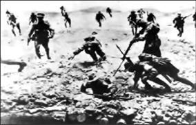
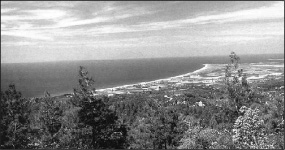

ÖNSÖZ
Büyük öğretmen olan ‘tarih’i iyi dinlediğimiz söylenemez. Uzun yıllar o öğretmenin derslerinden faydalanamadık. O canla başla bize hatalarımızı ve doğrularımızı anlatırken biz lüzumsuz şeylerle uğraşan öğrenciler gibiydik.
Çanakkale Savaşı, Anadolu toprağında nasıl tutunduğumuzu ve bundan sonra da nasıl tutunabileceğimizi anlatan önemli bir dersti. Tarihi bir defa daha kürsüye davet ederek bu dersi hepimiz için tekrarlamasını istedik.
* * *
İngiltere’ye Osmanlı Devleti’nin dört bir yanından ulaşan istihbarat raporları artık Osmanlı Devleti’nin tükendiğini, en az iki asırdır süren bölme, parçalama, zayıflatma faaliyetlerinin kesin sonuç verdiğini, son bir darbe için zamanın geldiğini bildiriyordu. İngiliz sömürgeciliği, bağımsız tek Müslüman devleti olan Osmanlı Devleti’ni dağıtmak ve kendisini İstanbul ile taçlandırmak için hazırdı.
Osmanlı Ordusu daha iki yıl önce Balkan Harbi’nde hezimete uğramış, Osmanlı Yönetimi siyasal kavgalar içinde karışmış, ülkede dirlik ve düzen kalmamıştı. Konsolosluklar azınlık çetelerine dağıtılmakta olan silahlarla doluydu. Bu duruma düşmüş bir devletin, dünyanın en güçlü donanması olan İngiliz donanmasına ve İngiltere-Fransa ittifakının acı bir kuvvete sahip ordularına direnebilmesi düşünülemezdi. Üstelik hem İngiltere hem Fransa sömürgelerinin kaynaklarını da kullanacak, on binlerce sömürge askeri beyinleri yıkanarak savaşa sürülecekti. Osmanlı, kaybetmeye mahkûm görünüyordu.
“Türk lokumları bizim olacak!”, “Türkleri yalnız İstanbul’dan değil, Anadolu’dan söküp atacağız!”, “İki hafta sonra İstanbul’dayız!” şarkılarının eşliğinde Çanakkale’ye doğru yola çıkan İngiltere ve Fransa, Gelibolu Yarımadası’nda Türk milletinin şanlı içtihadı ile karşılaştı. Mehmetçik “Ayağımda çarıkla, yedek parçası olmayan tüfekle, yarı aç yarı tok ben nasıl savaşayım? Bana hesap verin!” demeyecekti. Mehmetçik orasının olan bitenin hesap sorulacağı bir yer olmadığını, bundan sonra olacak olanlara karar verilecek bir yer olduğunu hissetmişti. Karadan ve denizden saatler süren bombardımanla alt üst olmuş siperlerin arasından kanlar içinde sürünerek çıkacak, son bir gayretle doğrulacak ve süngüsüyle düşmanın üzerine atılacaktır.
Yaralı Mehmetçikler sıraya girmiş, yaralarının sarılmasını bekliyorlardı. Doktor, sıradaki bir çavuşun ayağının etrafında kan biriktiğini gördü. “Senin yaran hâlâ kanıyor, öne gel, önce sana bakayım.” dedi. Çavuş, “Bırakın aksın!” cevabını verdi. “Balkan Cenginin karasını temizliyoruz!”1
İngiliz istihbarat raporları çok zor anlarda ülkenin yönetimini bir anda eline geçiriveren “Mehmetçik ruhu”nu anlayamamıştır. “Yetiş ya Muhammed, kitabın gidiyor!” diye haykıracak Binbaşı Lüfü Bey’den haberdar olamamıştır.
Hiç olmazsa bazı ruhlar her zaman dimdik ve sapasağlam kalacak, onlar da bütün düşmanlıklarla baş etmeye daima yetecektir.
* * *
Bu kitapta ilk önce I. Dünya Savaşı’nda Çanakkale Cephesi’nin açılma sebeplerini özetledik. Sonra 18 Mart 1915 deniz zaferine ulaşan yolu ve o büyük günü ayrıntılarıyla birçok kaynaktan faydalanarak anlattık.
Düşmanın karaya asker çıkardığı 25 Nisan 1915 günü, Çanakkale Savaşı’nın bütün karakterini taşır. 25 Nisan’a ayrı bir bölüm ayırdık. Daha sonra Çanakkale Muharebeleri’nin 25 Nisan 1915’ten 8 Ocak 1916’ya kadar bir özetini vermeyi uygun bulduk. Sonraki bölümlerde Mehmetçiğin eşsiz kahramanlığı ve fedakârlığı ele alındı.
* * *
Kitabın amacı Çanakkale Savaşı’nı bütün yönleriyle anlamak isteyen özellikle genç okuyucu için bir başlangıç, bir giriş olabilmektir. Çanakkale’de vatanı savunmak için gösterilen kahramanlıkla ilgili hemen herkesin bir bilgisi olduğunu ancak savaşın kendisine dair bilgilere sahip olunmadığını gördüğümüzden savaşın nasıl gelişip sürdüğünü özetleme ihtiyacı duyduk. Bunu yaparken kaynağı belli olmayan olaylara yer vermemeye çalıştık.
* * *
Çanakkale Geçilmez okundukça Mehmetçiği sevme sanatına sahip yürekleri yüreğimde hissedecek, bir müddet yurdun her köşesinden yükselecek “Seni seviyorum Mehmetçik” sesleriyle yürüyeceğim.
Aziz şehitlerimiz, toprağa düştüğünüz anlara karışıyor ve sizi gururla, sevgiyle, hürmetle, işte bir defa daha anıyoruz. Hüzünlenmeyin ve ümitsiz olmayın. Sizi hiç unutmayacak ve size lâyık olmaya çalışacak evlatlarınız var.
Son olarak, aziz şehitlerimiz için yeryüzünün en güzel mısralarını yazmış olan Mehmed Âkif’i hasret ve sonsuz sevgi ile anıyorum.
Recep Şükrü APUHAN
I. DÜNYA SAVAŞI’NDA ÇANAKKALE CEPHESİ
Sa vaş Başlıyor
İngiltere’nin sömürgecilikle elde ettiği zenginlik ve büyük siyasî güç karşısında Almanya’nın rahatsızlığı giderek artıyordu. Üstelik Fransa da sömürgecilik faaliyetlerini genişletiyordu.
1888’de İmparator olan II. Wilhelm “güçlü donanma, güçlü ordu siyaseti” ile Alman Milliyetçiliğine hız verdi. 1871’de Almanya’ya yenilen ve Alsace Lorraine bölgesini kaybeden Fransa, Almanya karşısında ikinci plana düşünce İngiltere’ye yaklaştı. Gittikçe güçlenen Alman ordusu Avrupa’da dengeleri sarsıyordu.
1911’de Fransa’nın Fas’a yaptığı çıkarmadan sonra Fas’ın Agadir Limanı’na Panther isimli harp gemisini yollayan Almanya niyetini belli etti.
Almanya’nın Afrika ve Okyanus adalarında kendisini rahatsız etmesi, Fas’taki Fransız varlığını sorgulaması İngiltere’yi endişelendirdi. Alman tehlikesi giderek büyüyordu.
İngiltere’nin İngiliz olmayanları hor görme siyaseti de Almanları derinden etkiliyor ve sinirlendiriyordu. II. Wilhelm İngiliz ordusu için “Aşağılık küçük ordu” diyecektir.
Rusya ise Uzakdoğu’da Japonlar tarafından durdurulunca Balkanlar’a dönmüş, Slavlığı koruma siyasetine ağırlık vermişti. Rusya’nın Balkanlar’ı ele geçirme amacı Almanya’yı kızdırıyordu. Almanya Balkanlar’da söz hakkı isteyen Avusturya’nın müttefikiydi ve Slavlığın Cermenliği ezmesine izin veremezdi.2
Her geçen gün sesini biraz daha yükselten Almanya karşısında Rusya, İngiltere ve Fransa’ya yaklaşmaya başladı. Almanya ise Balkanlar’daki Rus faaliyetlerine karşı tutumuyla Osmanlı Devleti’ne yakınlaşmış oluyordu. Bu yakınlaşmanın Mısır’ı tehlikeye düşürebileceği korkusu İngiltere’nin dikkatini arttırdı.
İngiltere’nin tek büyük güç olmasından nefret eden Almanya ile Almanya’nın sömürgelerine ortak olmak istemesinden hiddete kapılan İngiltere iki ayrı bloğun başında karşı karşıya geldiler.
Almanya, Avusturya–Macaristan, İtalya üçlü ittifakı, İngiltere, Fransa, Rusya üçlü itilâfı oluşmuş oluyordu.
İttifak-ı Müselles: Üçlü Birleşme ve İtilaf-ı Müselles: Üçlü anlaşma.
Sonradan İtalya itilâf; Osmanlı Devleti ve Bulgaristan, ittifak saflarına geçtiler. Sırbistan, Romanya, Yunanistan, Japonya ve ABD de İtilâf Devletleri’ne katıldı.
Artık dünya bir barut fıçısına dönmüş patlamak için bir kıvılcım bekliyordu.
Avusturya–Macaristan İmparatorluğu Veliaht Prensi Ferdinand ve eşi 28 Haziran 1914’te Saraybosna’da Sırp öğrenci Princip tarafından öldürüldü. Barut fıçısı tutuşuverdi.
Avusturya 23 Temmuz 1914’te verdiği ağır ültimatomun bütün maddelerinin kabul edilmediği gerekçesiyle Almanya’nın onayını alarak 28 Temmuz 1914’te Belgrat’ı bombaladı.
Gavrilo Princip suikastten sonra, yakalanırken...
29 Temmuz’da Rusya seferberlik ilan etti. 1 Ağustos 1914’te Almanya, Rusya’ya savaş açtı.
I. Dünya Savaşı başlamıştı.
3 Ağustos’ta Almanya, Fransa ve Belçika’ya; 4 Ağustos’ta İngiltere, Almanya’ya; 5 Ağustos’ta Avusturya, Rusya’ya; Karadağ, Avusturya’ya; 6 Ağustos’ta Sırbistan, Almanya’ya; 11 Ağustos’ta Karadağ, Almanya’ya; Fransa, Avusturya’ya; 13 Ağustos’ta İngiltere, Avusturya’ya harp ilân etti.
İtilâf Devletleri’nin İstanbul’u Rusya’ya vaat etmeleri İtalya’yı İtilâf Devletleri’nin yanına çekecek, Osmanlı’dan toprak ve 12 Adalar vaadi ile saf değiştirecek olan İtalya 23 Mayıs 1915’te Avusturya’ya, 20 Ağustos 1915’te de Osmanlı Devleti’ne harp ilân edecektir.
Bulgaristan ise 5 Ekim 1915’te Almanya’nın yanında harbe katılacaktır.
İngiltere’nin öncelikli hedefi Osmanlı İmparatorluğu’nu dağıtmaktı. Bağımsız bir Müslüman devletinin varlığı, İngiltere’nin Müslüman sömürgelerindeki egemenliğinin temeline konulmuş bir bomba gibiydi.3
Osmanlı Devleti varlığını devam ettirdiği müddetçe İngiltere’nin veya bir başka Avrupa ülkesinin dünyayı denetleyebilmesi mümkün değildi.
Üstelik orada yepyeni bir enerji kaynağı vardı. Bu kaynaklara mutlaka el konulmalıydı. Bunun da yolu Osmanlı’yı dağıtmak, Ortadoğu’yu zerrelere bölmek, buralarda uydu devletler oluşturmak ve bunları birbirine düşürmekten geçiyordu.
Osmanlı Devleti’nin Savaşa Katılması
I. Dünya Savaşı’na gelinen süreçte Osmanlı Devleti siyasal kavgaların, kördüğüme dönüşmüş “çözüm” tartışmalarının ve kanlı suikastların sonuçlarıyla uğraşmaktadır.
1908’de Bosna-Hersek, 1911’de Trablus, 1912’de Balkanlar elden çıkmıştır. Acımasız, soğukkanlı ve olağanüstü akıllı İngiliz siyaseti Rusya ile kâh çekişerek kâh anlaşmış görünerek Osmanlı’yı silmek kararındadır.
Bitkin Osmanlı, İngiltere ve Rusya’nın tahrik ettiği Arap ve Ermeni ayaklanmalarıyla karşı karşıyadır.
1914 Eylül ayında Irak’ta, Şatra’da, Musul’da ve Barzani bölgesinde isyanlar vardır. İzmir’de Rumlar, doğuda Ermeni ve Nasturiler devletle harp halindedir. Irak’taki İtilâf Devletleri konsoloslukları çetelere dağıtılacak silahlarla doludur. Diğer taraftan Rusya, Ermenileri silahlandırmaktadır. Arabistan’da İngiliz faaliyetleri en üst safhaya ulaşmıştır.4 İstanbul’da bazı gazeteciler ayaklanmalara destek olmakta, Yahya Kemal’in deyişiyle “kabak tadı veren yazılarla” Ermenileri savunmaktadırlar.
İngiltere’nin gözü Irak ve Suriye’dedir. Rusya hem Boğazları hem Kafkas sınırlarından İskenderun’a kadar uzanan bölgeyi istemektedir. İtalya’nın hayali 12 Adalar’dır.
Osmanlı Devleti 1908’de İkinci Meşrutiyet sancıları içinde iken İngiltere Kralı VII. Edward ile Rus Çarı II. Nicola Finlandiya Körfezi’ndeki Reval’de buluşmuşlar, Osmanlı’yı paylaşma planlarını görüşmüşlerdi.
Daha savaş başlarken İngiliz Başbakanı Asquit, “Osmanlı Devleti kılıçla ortadan kaldırılacaktır.”, Savaş Bakanı Kitchener da “Türkiye’yi mahvedinceye kadar savaşa devam edeceğiz.” diyeceklerdir.5
Rusya 14 Ocak 1914’te “Boğazları İşgal Komisyonu” kurmuştu. Rus Dışişleri Bakanı Sazanov 23 Mart 1914’te Çar’a verdiği raporda, “Boğazlar için harekete geçme zamanı geldi” diyordu.6
İngiltere ve Rusya’nın Osmanlı toprakları üzerindeki hareket ve planları çok açık olduğu halde savaş yaklaşırken Osmanlı Devleti hem İngiltere hem de Fransa ile bir ittifak arayışını ihmal etmedi. Bu arayış bir sonuç vermeyecekti. İngiltere ve müttefiklerinin yıkmayı planladıkları bir devletle ittifaka girişmesi düşünülemezdi.
Osmanlı’nın tarafsız kaldığı bir dünya savaşından galip çıkacak İngiltere ve Rusya’nın Osmanlı’dan ufacık bir iz kalmamacasına yüklenecekleri ise belliydi. Osmanlı–Almanya yakınlaşması bir tercihten çok bir mecburiyet olarak ortaya çıktı.
Türk Devleti, İngiltere ve Rusya’nın topraklarına mutlaka saldıracağını düşünüyor ve çekilmek kaçınılmaz olsa bile vuruşa vuruşa çekilmeyi tercih ediyordu. Bu takdirde savaşın sonucu ne olursa olsun ortaya çıkacak manevî güç bize yeniden bir varlık inşa edebilme imkânını verecekti. Elde bir Türk Devleti kalması için Kafkasya’da, Irak’ta, Suriye’de vuruşmak gerekiyordu.
Goben (Yavuz) ve Breslav (Midilli) zırhlıları Türk sularında.
Türkiye Cumhuriyeti Devleti varlığını I. Dünya Savaşı cephelerinde şehit olmuş yüz binlerce mübarek evlâdına borçludur, gücünü de halen Libya’daki, Yemen’deki, Galiçya’daki şehitlerinden almaktadır.
Almanya ise Osmanlı’nın savaşa girmesini istiyordu. Çünkü bu takdirde Rusya kuvvetlerinin bir kısmını Kafkas Cephesi’ne gönderecek, İngiltere Batı Cephesi’ne bütün varlığını koyamayacak, bu durum da Almanya’yı rahatlatacaktı.
2 Ağustos 1914 günü İstanbul’da Türkiye ile Almanya arasında gizli işbirliği anlaşması imzalandı.
Aynı gün İngiltere’de bir arbede yaşanıyordu. İngiltere 7.5 milyon altın karşılığında sipariş ettiğimiz ve parasını ödediğimiz iki harp gemisine bayrak çekme töreninden yarım saat önce el koyduğunu açıklıyor, gemilere zorla çıkan denizcilerimiz İngilizlerle yaka paça oluyordu.
Akdeniz’de bazı limanları bombalayan ve bir-iki gemi batıran Alman harp gemileri Goben ve Breslav 10 Ağustos 1914’te Çanakkale Boğazı’na girdi. Gemiler iki saat süren bir telefon trafiğinden sonra içeri alınarak İstanbul’a gönderildi. Ortaya çıkan diplomatik kriz karşısında zaman kazanmak isteyen Osmanlı Devleti bu gemileri satın aldığını bildirdi. Gemilere Yavuz ve Midilli adları verilecektir.
11 Ağustos 1914 sabahı Alman gemilerinin arkasından Çanakkale’ye gelen İngiliz filosu Boğaz’a girmek istedi. Boğaz’a girişi engellenen Amiral Carden, “Elimizde harp halinde bulunduğunuza dair bir bilgi yok.” dedi. Kendisine, “Bu işler diplomatları ilgilendirir. Burada toplar konuşur.” cevabı verildi.7 Filo, Boğaz açıklarına çekilip beklemeye başladı.
29/30 Ekim 1914 gecesi Karadeniz’e açılan Goben ve Breslav, Odesa ve Sivastopol limanlarını bombaladı.
31 Ekim 1914’te Osmanlı Devleti fiilen harbe girmiş oluyordu.
Rusya 2 Kasım 1914’te Osmanlı’ya harp ilan etti.
3 Kasım 1914’te İngiliz harp gemileri Ertuğrul ve Seddülbahir, Fransız harp Gemileri de Kumkale ve Orhaniye tabyalarını bombaladı. 17 dakika süren bombardımanda Seddülbahir tabyalarının merkez cephaneliği isabet alarak havaya uçtu. 5 subay ve 80 askerimiz gömülecek tek parçaları kalmadan şehit oldu.8
5 Kasım’da İngiltere ve Fransa Osmanlı Devleti’ne harp ilân etti. Osmanlı Devleti buna karşılık 16 Kasım 1914’te “Cihad-ı Mukaddes” çağrısı yaptı. Fakat asırlardır göğsünde kan, gözünde yaş eksik olmamış Mehmetçikten başka cevap veren olmadı.
O, son bir gayretle yine silahına davrandı, yine büyüklerinin elini öptü, yine çocuklarını, sevgilisini, dumanı iyice zayıflamış baba ocağına emanet edip yollara düştü.
Çanakkale Cephesi
2. Abdülhamit’in “Düvel-i Muazzama’nın şımarık çocuğu” dediği Yunanistan’da savaşın başlamasıyla birlikte hesaplar da başlamıştı.
Yunan Başbakanı Venizoles 27 Ağustos 1914’te Londra’ya gönderdiği telgrafta, “Kara ve deniz kuvvetlerimiz emrinizdedir” diyordu. Bu telgraf İngiltere’nin dikkatini Çanakkale’ye çevirdi.9
Ancak Rusya Yunanistan’ın İstanbul’u ele geçirmesinden korkuyor, Yunan Kralı da asker vermek için Bulgaristan’ın tarafsızlığını şart koşuyordu.
İngiltere Yunanistan’ı kullanmaya hazırdı ama bu plan daima Rusya engeliyle karşılaşacaktır.
Kasım 1914’te İngiliz hükümeti ve komutanlar Çanakkale’ye taarruz düşüncesini tartışmaya başladılar.
25 Kasım 1914’te İngiliz Harp Meclisi’nde bir konuşma yapan Bahriye 1. Lordu (Bahriye Nazırı) Winston Churchill, Çanakkale’ye taarruzla elde edilecek faydaları sıraladı ve şöyle dedi:
“Türklerin gırtlağı bu boğazdadır. Onu demir bir el ile şöyle bir sıkmak yeter.”10
2 Ocak 1915’te Rusya’nın feryadı duyuldu. Grandük Nikola Kafkasya’da zor durumda olduklarını bildiriyor ve Türkiye’ye karşı harekete geçilmesini istiyordu. Onlar doğusuna hücum ederek Almanya’nın Batı Cephesi’nden asker çekmesini sağlamışlar, İngiltere ve Fransa’yı rahatlatmışlardı. Öyleyse şimdi yardım etme sırası İngiltere’deydi. Bununla birlikte Rusya, İngiltere’nin İstanbul’u tek başına ele geçirmesinden kaygılanıyor, ileri gitmemeleri konusunda İngiltere’yi uyarıyordu.11
Eceabat Kılavuzu’ndan.
İngilizler hiçbir zaman Boğazları Ruslara verme düşüncesinde olmamışlar ama “Vereceğiz” oyalamasından da geri kalmamışlardır. 1916 Ekiminde yayınlanan bir vesikaya göre İngiltere Başbakanı Grey, “Rusya’yı ayakta tutabilmek için böyle bir teminat esas teşkil ediyor.” diyordu.12
Rusya’nın feryadı üzerine İngiliz Harbiye Nazırı Lord Kitchener Çanakkale’ye taarruz planının ayrıntılarını araştırmaya başladı. Çanakkale’nin yalnızca donanma ile zorlanması düşüncesi giderek ağırlık kazanıyordu.
11 Ocak 1915’te Amiral Carden taarruz planını Bahriye Nezareti’ne sundu. Harp Meclisi 13 Ocak 1915’te Çanakkale’nin şubat ayında bombardımana tutulmasına karar verdi. İngiliz donanmasının bir hamlede İstanbul’a varabileceği ve Rusya’nın buğday ihraç edebileceği haberleri Şikago borsasında buğday fiyatlarını düşürmeye başladı.13
ABD’nin İstanbul Büyükelçisi Henry Morqenthau şöyle diyordu: “200 yıldan beri zaferden zafere koşan, dünyanın tek yenilmez gücü olan İngiliz Donanması’na karşı Çanakkale’deki üç-beş topun galip gelmesi nasıl umut edilebilirdi?”14
İngiliz Harp Meclisi 28 Ocak 1915’te Çanakkale’nin donanma ile geçilmesi planını onayladı. Fransa da taarruza katılmayı kabul etti. Rusya ise donanmasıyla İstanbul’a hücum etmesi teklifini “Yeterli gemim yok.” diyerek geri çevirdi. Bu durum Rusya’nın İstanbul üzerindeki düşüncesini tekrar hatırlatmasını engellemedi. Ruslar Odesa’da ordu topluyordu. İngiliz donanması Boğazları geçer geçmez bu ordu İstanbul’u işgal edecekti.15
İngiltere Batı Anadolu’dan “pay” ve ayrıca Kıbrıs’ı teklif ederek Yunanistan’dan Gelibolu’ya asker çıkarmasını istedi. Ancak Yunan Kralı’nın Bulgaristan tehlikesine karşı Selanik’te 2–3 kolordu toplanması şartı üzerine bundan vazgeçti.
İngiliz Harp Meclisi 17 Şubat 1915’te, donanma Marmara’ya girdikten sonra kara kuvvetlerinin işgal için kullanılmasına karar verdi. Donanmanın Çanakkale Boğazı’na yapacağı yıpratma hücumları ile bunu takip edecek asıl hücum bir aylık bir süre gerektiriyordu. Bu süre içinde kara kuvvetleri hazırlanmış olacaktı.16
Bu karardan sonra 19 Şubat 1915’te Boğaz’a ilk hücum yapıldı.
Çanakkale Cephesi’nden Ne Bekleniyordu?
Çanakkale’de bir cephe açılmasının görünürdeki amaçları, Rusya üzerindeki baskının azaltılması, Almanya’ya sempati duyan İtalya’ya gözdağı verilmesi, Balkan Devletleri’nin tarafsızlığının veya İngiltere’nin yanında savaşa girmelerinin sağlanmasıydı.
Çanakkale Cephesi’nin daha temel sebepleri ise şunlardır:
İngiltere, İstanbul’u susturarak Süveyş Kanalı ve Hindistan yolu üzerindeki Türk tehlikesini tamamen ortadan kaldırmak, diğer cepheleri bir hamlede tasfiye etmek istiyordu.
Rusya, Almanya ile anlaşabilir ve Boğazları alıp savaştan çekilebilirdi. Bu İngiltere için bir felâket olurdu. İstanbul, İngiltere’nin en önemli hedefiydi. Ayrıca Rusya savaştan çekildiği takdirde İngiltere ve Fransa’nın Batı Cephesi’nde baş başa kalacakları Almanya ile baş edebilmeleri çok zor olabilirdi.
Rusya’nın Almanya ile anlaşmadan da Boğazlara ulaşabilme ihtimali vardı. Ruslar o sıralarda Karpatlar’ı aşmış durumdaydı. Öyleyse İngiltere İstanbul’a Ruslardan önce girmeli, ipleri elinde tutmalıydı.17
Osmanlı İmparatorluğu’nun tasfiyesinde ipler kimin elindeyse aslan payı da onun olacaktır. Bu yönden Çanakkale’de İngiltere’nin gerçek amacı Osmanlı’dan ne kalacaksa hepsiyle sömürgeciliğini taçlandırmaktı.
Avustralya’da gençleri Çanakkale’ye savaşmaya çağıran bir ilan.
İngiltere ile Rusya arasında Boğazlar konusunda yapılan gizli-açık anlaşmaların hiç birinin İngilizler açısından bir değer taşımadığı çok sonraları daha iyi anlaşılacaktır.
18 MART 1915 BO⁄AZDA BÜYÜK SAVAŞ
18 Mart’a Gelirken
18 Mart öncesi hücumların amacı Boğaz’ın önce dışındaki sonra merkezindeki tabyalarımızın imha edilmesi, Boğaz’daki mayınların temizlenmesi ve Türk savunmasının manevî yönden çökertilmesiydi.
Bu amaçla Boğaz’a ilk hücum 19 Şubat 1915’te yapıldı. Saat 07.45’te Boğaz önlerine gelen İngiliz ve Fransız harp gemileri dış tabyalarımızı 10 saat boyunca bombaladı. Bombardımana uçaklar da katıldı. Ertuğrul ve Orhaniye bataryalarımızdan ikişer topla açılan ateşte 7 düşman gemisi isabet aldı. 4 askerimiz şehit oldu, 11 askerimiz yaralandı. Düşmanın çekilirken açtığı son ateşteki şehit, Trabzonlu genç subay Murtaza’ydı.18
22 Şubat 1915’te İngiltere’de Globe Gazetesi: “Türk istihkâmlarının saf dışı bırakılmasından dolayı hayret etmeye ihtiyaç hissetmiyoruz.”19
25 Şubat 1915 günü saat 9’da 15 harp gemisi Ertuğrul ve Orhaniye tabyalarına ikinci hücumu başlattı. Karşılık veren toplarımızın namlu çemberleri yoğun ateşten koparak parçalandı. Öğleye doğru son mermilerini atan Ertuğrul tabyası toprağa gömüldü. Gemiler Seddülbahir’e yönelirken Yüzbaşı Seyfettin’in emri ile top başı eden askerlerimiz buradan Agamemnon zırhlısına isabetli atışlar yapıp sığınaklara geçtiler.
Az sonra da düşman bombardımanı Kirte’ye kadar “üst üste bir şey” bırakmadı. Bataryamız enkaz haline geldi.
Batarya karanlıkta ve yağmur altında ağlaya ağlaya Kirte’ye çekildi. Askerler burada verilen yemeği reddettiler. Bir er şöyle diyordu: “Bu nimet geçer mi insanın boğazından... Toplarımız gitti efendim.”
Emir üstüne hiç olmazsa birer çorba içmeye razı oldular. “Göreceğiniz işler hatırına” demişti komutan.20 Bugün 13 şehit, 19 yaralı vardı.21
İngilizler ertesi gün karaya bir müfreze çıkarıp sağlam kalan namluları da dinamitledi.
Haber İngiltere’de duyulduğunda Londra halkı Picadilly ve Trafalgar meydanlarında karlar içinde içki içip dans etti.22
26 ve 27 Şubat 1915’te muhriplerin himayesindeki mayın tarama gemileri Boğaz’a girdi, 3 muhrip merkez (orta) bataryalarımıza ateş açtı. Kumkale ve Seddülbahir’e çıkarılan askerler kıyıda tahribat yaptı.
2 Mart 1915’te Akdeniz Filo Komutanı Amiral Carden Londra’ya bir telgraf çekti: “Havalar müsait gittiği takdirde iki hafta sonra İstanbul’da olacağımızı umut ediyorum.”23
Aynı günün gecesinde 6 mayın tarama gemisi Boğaz’a girdi. Tek projektörümüzle aydınlatılan bu gemiler Soğandere seyyar bataryası tarafından dağıtıldı. Üçü battı, diğer üçü de yaralandı.
Bir gemiden sökülen eski model tek projektörü Dnz. Yüzbaşı Ahmet Hidayet ıslah etmiş, buna bir motor ve dinamo uydurarak bir araba üstünde seyyar hale getirmişti. Ahmet Hidayet bu yolla sonradan 6 projektör daha yaptı.24
3 Mart 1915 günü Seddülbahir önüne gelen büyük bir harp gemisi Kepez kıyılarını bombaladı. Ağaçlar kökünden söküldü. Gece de 9 mayın tarama gemisi 2 muhriple Boğaz’a girdi. Bu gemiler “budanarak” çekildi.
İngiliz donanmasının Boğaz’da merkez tabyalarımızı bombalaması İngiltere’nin Boğaz’ı kolay geçeceği tahminlerini güçlendirdi. Rusya yine harekete geçmişti. Yunanistan’ın 3 tümenle harbe katılmak istemesi üzerine Çar, 3 Mart’ta İngiliz Konsolosuna, “Özellikle Yunan Kralı Konstantin asla İstanbul’a girmemeli.” dedi.25 4 Mart’ta da İngiltere’ye bir nota veren Rusya Boğazları istedi. İngiltere ve Rusya’nın 10 Nisan 1915’te yapacakları anlaşma şöyle olacaktı:
İstanbul, Boğazlar, Trakya’nın güneyi, Sakarya Nehri ile İzmit Körfezi’nin sonradan belirlenecek bir noktası arasındaki bölge ve Marmara Adaları Rusya’ya verilecek. Rusya da İngiltere ve Fransa’nın Asya Türkiye’sindeki özel haklarını, Osmanlı egemenliğinden ayrılacak Arap ülkelerinin bağımsızlığını kabul edecek.26
4 Mart’ta dış tabyalar yine bombalandı. Seddülbahir ve Kumkale’ye dörder ağır makineli tüfek takviyeli birer bölük çıkarıldı. Her iki sahilde de bunlar süngü ile geri atıldı. Yalnız süngüyle mi? Hayır!
O gün Seddülbahir’de 27. Alay 3. Tabur 10. Bölüğünden yarım piyade takımı vardı.27 Bu yarım takıma Mustafa oğlu Bigalı Mehmet Çavuş komuta ediyordu. O Mehmet Çavuş ki övülmüş bir dua gibidir. Tüfeğinin mekanizması bozulunca düşmana taş atmaya başlar. Hırsından tüfeğini yere atınca da bunu gören düşman, ayağa kalkıp üzerine ateş açar. Sonrasını Biga’da Uluğ İğdemir’e şöyle anlatır:
“İstihkâm küreğini çekerek üzerine atıldım. Kaç kişiyi vurduğumu hatırlamıyorum. Gözümü açtığım zaman kendimi sıhhiye çadırında buldum.”28
Ordusuna çok güvenen fakat yanılan General de Robeck.
O sıralarda Çanakkale’ye yeni gelmiş olan Yarbay Mustafa Kemal gece yaralılar arasında dolaşırken rastladığı Mehmet Çavuş’un fedakârlığını nişan verilmesi teklifiyle rapor edince Türkiye Mehmet Çavuş’u tanır. Daha sonra Kayserililer ona altın saat gönderirler.
Düşmanın 4 Mart’ta karaya asker çıkarmasının amacı hem tahribat yapmak hem de tutunabildiği takdirde donanmanın hücumundan evvel karada bir dayanma noktası oluşturmaktı. Karaya çıkanlar denize dökülünce piyade dolu sandal ve mavnalar geri çekilmiştir.29
6 Mart 1915. Daily Telegraph Gazetesi: “Dehşetli silahlarımızın çok geçmeden Türk İmparatorluğu’nun başkentinde hükümran olacağını umut edebiliyoruz.
Donanmamız, Napolyon’un dünyanın anahtarı dediği bu meşhur ve tarihi şehrin üçüncü dönemini kapayacaktır.”
Standart Gazetesi: “Bu iş İngiliz ve Fransız filosu er ve subaylarına keyif veriyor. Filo çok geçmeden Marmara’ya ulaşacaktır.”30
7–8 Mart günleri merkez tabyalarımız yine bombalandı. 10 ve 11 Mart gecelerinde büyük harp gemileri korumasında mayın taraması yapıldı. 12 Mart günü Anadolu ve Rumeli sahilleri saatlerce bombalandı.
Akdeniz Seferi Kuvvetler Başkomutanlığı’na atanan General Hamilton 13 Mart’ta Londra’dan yola çıktı.
16 Mart 1915’te zamanının beş yeni savaş gemisinden biri ve en güçlüsü olan Queen Elizabeth’in Inflexible zırhlısı ile birlikte “resmen” filoya katılmasına karar verildi.31 O zamana kadar toplarını Akdeniz’de deneyen Queen Elizabeth şimdi denemelerini Türkler üzerinde yapabilecekti.32 İngiliz komutanlar, eski sistem Türk istihkâmlarının bu geminin ağır toplarına dayanamayacağı görüşündeydiler.
Öteden beri rahatsızlığı bulunan Filo Komutanı Amiral Carden görevinden alındı. O Malta’ya giderken yerine Amiral John de Robeck getirildi.
17 Mart 1915’te Bozcaada’da yapılan toplantıda büyük hücumun ertesi gün yapılmasına karar verildi. Mayınlar temizlenmiş, tabyalar yerle bir edilmişti. Toplantıya Hamilton da katıldı. John de Robeck “Baylar” dedi. “Yarın akşam Marmara’dayız.”33
Zamanın en iyi savaş gemilerinden Inflexible.
Boğaz geçildiği takdirde karada kullanılacak iki tümenlik işgal kuvveti de Limni’de toplanmıştı.34 Yunan Başbakanı Venizoles, Limni adasını İngilizlere rahatça kullandırabilmek için kendince iyi bir yol bulmuştu: “Türkler Limni’nin bize ait olduğunu tasdik etmiyor. Öyleyse burayı Türk toprağı gibi işgal edebilirsiniz.”35
Sunday Times Gazetesi’nden Ashmead Bartlett36 şöyle yazıyordu:
“... İlk İngiliz harp gemisi Boğaz’dan geçtiği anda Avrupa’da Türk Devleti’nden iz kalmayacaktır. Buraya yığılan gemiler belki de Hıristiyanlık âleminin Türklere karşı yapabileceği son Haçlı Seferi içindir.
Bu son Haçlılar bir zamanlar Viyana kapılarından Kudüs’e kadar uzanmış olan eski Osmanlı İmparatorluğu’nun her bir köşesinde kemikleri dağılıp kalmış ortaçağ şövalyelerinin öcünü alacaktır.”37
Ama gerçekten mayınlar temizlenmiş midir ve istihkâmlar yerle bir midir?
Savunma
Boğaz dışındaki tabyalarımız şunlardı: Avrupa tarafında Seddülbahir ve Ertuğrul, Asya tarafında Kumkale ve Orhaniye tabyaları. Bu tabyalarda 19 ağır top bulunuyordu. Ayrıca havan ve hafif mantelli toplar yerleştirilmişti. Dış tabyaların görevi düşmanı mümkün olduğu kadar uğraştırmak, Boğaz’a girişimlerini zorlaştırmaktı. Ancak buradaki topların en uzun menzili 16 km idi.
Merkez tabyalarımız Çanakkale ve Kilitbahir etrafındaydı. Anadolu tarafında Mecidiye, Nara, Hamidiye, Çimenlik, Dardanos, Rumeli tabyaları vardı. Bu tabyalara irili ufaklı 137 top yerleştirilmişti. Adı ateşli olan bu topların en uzun menzili 16.900 metre idi. Tahkimat toprak siperlerden ibaretti.
Bunların dışında iç tabyalar denilen, tepe gerilerindeki gizli mevzilerde 8 top, 24 adi obüs, 10 tane de havan vardı.38
Nusret mayın gemisi.
Savaş gemilerinden çıkarılan toplarla Mesudiye, Cevat Paşa, Muin-i Zafer gibi yeni bataryalar kurulmuş, sahra obüsleriyle eski tip havanlar Erenköy ve Tenger sırtlarına yerleştirilmiş, soba borularından sahte bataryalar yapılmıştı.39
İngiliz-Fransız harp gemilerindeki top sayısı ise 336 idi.40 Bunların çoğu seri ateşli büyük toplardır.
Top sayıları çeşitli kaynaklarda farklı farklıdır. Meydan Larousse Ansiklopedisi Türk toplarının sayısını 150, düşman filosundaki top sayısını da 506 olarak gösterir.
Bunlardan başka 10 hatta 367 mayın dökülmüştü.41 Ancak dökülecek başka mayınlar da vardı.
17 Mart 1915 gecesi saat 22.30’da Müstahkem Mevki Komutanı Cevat Bey, Mayın Grup Komutanı Binbaşı Nazmi Bey’i çağırtarak eldeki son mayınların da dökülmesi emrini verdi.42
Nusret mayın gemisi gece yarısından sonra harekete geçti. Geminin süvarisi Önyüzbaşı Tophaneli Hakkı Bey’di. Eldeki son 26 mayın Türk ustaları tarafından yapılmış ve ücreti Osmanlı Donanma Cemiyeti tarafından ödenmişti. Gemide 1. Çarkçı Önyüzbaşı Ali, 2. Çarkçı Ahmet, 3. Çarkçı Hasan’dı. Güverte Yüzbaşısı Hüseyin, Elektrik Subayı Teğmen Hasan Abdullah ve Topçu Subayı Teğmen Kadri de bu tarihi yolculukta görevliydiler. Gemide 56 er vardı.
Binbaşı Nazmi Bey, 26 mayının Erenköy Koyu Akyarlar Mevkii’ne dökülmesini tamamladığında saat 03.20 idi. Nusret mayın gemisi, 05.40’da Çanakkale’ye döndü.43
17 Mart akşamı bir İngiliz uçağı Boğaz’ı taramış, mayın bulunmadığını rapor etmişti.44 Nusret’in harekete geçtiği saatlerde Boğaz’dan çıkmak üzere olan son mayın tarayıcılarının raporu da aynıydı.45 Bu yüzden bu yeni mayın hattı İngilizler için çok şaşırtıcı olacaktır.
Düşman gemilerinin Erenköy Koyu’nda ateşimizden korunabildikleri görülünce dökülmesine karar verilen son mayınlar sabah olduğunda çok iş görecektir.46
18 Mart 1915 - Zafer Günü
Gelen haberler düşmanın her an Boğaz’a yüklenebileceğini gösteriyordu. Savunma hazırdı.
18 Mart sabahı teftiş için Kilitbahir’e geçmek üzere karargâha gelen Cevat Paşa (henüz terfi etmişti) nöbetçi gözetleme subayından bir telefon aldı. Bozcaada önlerinde hareket vardı. Cevat Paşa, Kurmay Başkanı Yarbay Selahattin Adil Bey’den keşif yaptırmasını istedi. Alman Binbaşı Karl Schneider ve Yüzbaşı Serno 17 Mart’ta gelmiş olan bir Gotha uçağı ile havalandılar. Düşman Boğaz’a doğru ilerliyordu.47 “Hazır ol” emrini alan subaylar idare ve gözetleme yerlerine, erler toplarının başına koştular. Anadolu ve Rumeli tabyalarından ezan sesleri yükseliyordu.48 Topçular toplarını öpüyorlardı.49 Toprak tabyalardaki adi ateşli topların, zamanının en güçlü donanmasına karşı savaşı başlamak üzereydi.
İngiliz Queen Elizabet Zırhlısı.
Düşman filosu saat 10.00 sıralarında Boğaz’ın önüne geldi.
A hattında Amiral de Robeck emrinde Queen Elizabeth, Agamemnon, Lord Nelson ve Inflexible zırhlıları vardı. Bunların güney ucunu Triumphe, kuzey ucunu Prens George koruyordu.
Amiral Guepratte emrindeki 4 Fransız zırhlısı B hattındaydı: Gaulois, Charlemagne, Bouvet ve Souffren.
C hattında Albay Hayes Solder emrinde; Majestic, Swiftsure, Ocean, Irresistible, Wengeance, Albion zırhlıları bulunuyordu. Bunlar Canopus ve Cornwallis zırhlılarının korumasındaydı. Filoda ayrıca 1 uçak gemisi, muhtelif muhripler, mayın tarama gemileri ve kruvazörlerdeki deniz tümeni kıtalarını karaya taşıyacak 7 nakliye gemisi vardı.
Saat 11.25’te merkez tabyalarımızın 8 mil yakınına sokulan A hattı zırhlıları buradan korkunç bombardımana başladı. Ağır toplarımız, filonun menzil içine girmesini bekliyordu. Saat 12’de Inflexible ilk isabeti aldı. Queen Elizabeth şehri bombaladı. Çanakkale yanıyordu. Tabyalarımız kızgın demir yağmuru altındaydı. Gökten alev yağarken büyük toprak kütleleri de göğe fırlıyordu. Gemiler duman içindeydi. Sular toplarımızla birlikte patlıyor, dev su sütunları göğü tutuyordu.
“Denize atılan bir tabak gibi” sulara gömülen Bouvet.
Agamemnon 12.30’a kadar yedi isabet aldı. Dardanos tabyasındaki toplar toprağa gömüldü. Subay ve erler ağır ateş altında topları yine hazırladılar.
Amiral de Robeck 12.30’dan sonra B hattını teşkil eden Fransız zırhlılarını harekete geçirdi. Şimdi “Harp gemileri ile kara bataryaları arasında yaşanmış muharebelerin en büyüğü” cereyan etmektedir.
Saat 13.30’da Gaulois ağır şekilde yaralandı ve su almaya başladı. Bu gemi ilerleyen saatlerde zorlukla Tavşan Adalarında karaya oturtulacaktır. Saat 13.45’te Bouvet isabet alarak sarsılmaya başladı. Bir isabet de Charlemagne alırken cephaneliklerinden biri infilak eden Souffren savaş dışı kaldı. Bouvet’den denize dökülen askerlerin perişan hali karşısında hislenip “Allah’ım, bu facia son bulsun.” diye dua etmekte olan Anadolu Hamidiyesinin imamı, tam üzerinde patlayan mermi ile et ve kemik parçalarından bir yağmur haline gelerek şehit oldu. O sırada Erenköy’deki mayın hattına düşmüş olan Bouvet, “denize atılan bir tabak gibi” iki dakika içinde sulara gömüldü.50
Bu sahneyi seyreden biri vardı: Cideli Mehmet Çavuş. Onun iki ayağı da kopmuştu ve son nefesini vermek üzereydi. Bouvet vurulunca yükselen sevinç çığlıkları üzerine, “Ne olur kardeşlerim, ben de göreyim” diye yalvarmış ve Anadolu Hamidiyesinde nişancısı olduğu topun başına getirilmişti. Bouvet sulara gömülürken o da gülümseyerek son nefesini verdi.51
Aynı anlarda Dardanos yine toprağa gömülmüştü ve askerler yine toplarını ateşe hazırlıyorlardı.
Muharebe çok şiddetlendi. Tabyalarımızın üzerinde bir şimşek denizi dalgalandı. Toplarımız sıkışıyor, haberleşme tesisleri yerle bir oluyor, toprağa gömülen topların kurtarılması insanüstü bir gayret istiyordu.
Saat 14’te Filo, Namazgâh tabyasını bombardıman etti. Ateş kesilince elinde gres kovasıyla top yataklarını yağlamak için koşan Edremitli Muharrem Çavuş ansızın başlayan ateşte ikiye bölündü. Yanık ve kanlı iki kuru dal halindeki bacakları kopmak üzereyken asırların aşk ve medeniyet kelimeleriyle veda etti: “Vatan sağ olsun. Hakkınızı helâl edin.”52
Mayın tarayıcılar harekete geçmişti. Soğanlıdere bataryasına bir telefon geldi: “Şemsi, hazır ol!” 14.20’de 5 mayın tarama gemisi ve bir muhrip sulara gömülmüştü.
Aynı dakikalarda John de Robeck C hattına “ileri” emrini verdi. Boğaz alevden bir kundak oldu. 14.10’da Çimenlik’te korkunç bir patlama duyuldu. Cevat Paşa telefona sarıldı. Karşısına İnzibat Başçavuşu Mehmet çıktı: “Erler sığınakta. Santral memuru şehit oldu. Buraya geçtim.” “Hemen oradan ayrıl.” dedi Cevat Paşa. Mehmet şehit santral erinin üzerine bir battaniye örtüp sığınağa giderken binanın ön cephesi çöktü. Mehmet dayanamadı, kalas dayayıp çıktığı harabede telefon bağlantısını yine kurdu. Yanında arkadaşı Mustafa vardı. Az sonra yanlarına gelen Cevat Paşa erlerden birinin yarasını elleriyle temizleyip bağladı.
Çimenlik’te bir mermi kalenin bir bölümünü yıkmış, bir mermi de kale duvarına saplanıp kalmıştı.
14.30’da Inflexible tekrar isabet aldı. Gemi bir müddet çekildikten sonra yine döndü. 15.32’de Irresistible su kesimi altından yaralandı. O menzil açmak için Anadolu sahiline dönerken Rumeli Mecidiyesi ağır bombardımana tutuldu. Bu sıralarda Ocean’ın Irresistible’a yardım için ilerlemeye çalıştığı görüldü. 16.11’de Inflexible önce isabet aldı. Sonra mayına çarpıp sancağa yattı. Amiral, muharebe sahasının bütünüyle mayınlı olduğu düşüncesiyle dehşete kapılmıştı.53 Savaş dışı kalan Inflexible, Phaeton kruvazörünün refakatinde boğazın ağzına doğru kaçmaya başladı. Baş tarafı suya gömülen gemi Bozcaada’ya ulaşmayı başaracaktır.
Aynı dakikalarda Dardanos tabyasından gelen haber Üsteğmen Hasan Hulusî, Teğmen Mevsuf, Nişangâh Çavuşu Yozgatlı Yusuf, subay adayı Halim ve iki kablocu Mehmetçiğin şehit olduğunu bildiriyordu.54 Cevat Paşa Dardanos’a koştu. Şehitlerin üzerindeki örtüyü kaldırıp dolu gözlerle yüzlerini seyretti. Sonra doğruldu, esas duruşa geçti ve sert bir asker selamıyla şehitleri selamladı. “Kahraman evlatlarım” dediği duyuldu.55 Ertesi gün yapılan törende Paşa, askerlerinden ileride bir erkek evlat sahibi olurlarsa ismini Hasan koymalarını istedi.56 Üsteğmen Hasan da doğduğunu haber aldığı ama yüzünü hiç göremediği kızına Didar isminin verilmesini arzu etmişti.57
Saat 16’da iyice yan yatmış olan Irresistible 16.15’te mayına çarptı. Wear muhribi yanaşıp denize dökülen askerleri toplamaya başladı. Irresistible sürükleniyordu. Ocean üst üste aldığı emirlerle bu gemiyi yedeğine çekmeye çalışırken Swiftsure şiddetli ateşle tabyalarımızı dövüyor, Ocean’ın ateşine destek oluyordu.
İngiliz zırhlısı Irresistible.
16.20’de Ocean, Rumeli Mecidiyesi’nden atılan topla sarsılıp olduğu yerde dönmeye başladı. Tabyadan atılan ilk iki top geminin yakınlarında patlamış, üçüncü ise bir felâket gibi dümen donanımı üstüne inmişti. Ocean’ın kaptanı bağırıyordu: “Hani bu tabya susturulmuştu?!”
Colne, Jed, Chelmer muhripleri yardım için gelirlerken Ocean bu defa mayın hattına düştü. Batmak üzere olan gemi bir taraftan da bataryalarımıza hedef olmuştu. Bu atışlardan biri de Chelmer’in kazan dairesini vurdu.
Ocean’in kaptanı, feryadında haklıydı. Rumeli Mecidiyesi susmuştu. Ne var ki orada da Koca Seyit namında bir kahraman vardı.
Rumeli Mecidiyesi, Queen Elizabeth’in ağır bombardımanı ile saat 15.35 civarında çökmüş, cephanelik infilâk etmiş, askerlerimizin neredeyse tamamı şehit olmuştu.
18 Mart günü 276 kiloluk mermiyi sırtlayıp namluya süren Koca Seyit.
Sağ kalan Batarya Komutanı Hilmi Bey ile Niğdeli Ali, Seyit’i toprağın altından çıkarmışlar, Hilmi Bey yardım istemeye giderken Ali de olan biteni Seyit’e anlatmıştı.
Sonrasında, artık kendine gelmiş olan Seyit, vinci kopmuş ama ayakta kalan tek topun yanındaki 276 kiloluk gülleyi sırtına vurup namluya sürmüştü. Seyit ilk iki atışı isabet ettiremeyecek ama üçüncü gülle Ocean’ın arka tarafında patlayacak, geminin dümen tertibatı mahvolacaktır.
Amiral de Robeck, Filo’ya geri çekil emri verdi. Saat 19 civarında son düşman gemileri de Boğaz’ı terk ederken yarı batık durumdaki Irresistible ve Ocean hâlâ yüzüyordu. Anadolu sahiline yakın yerlerde sulara gömüldüklerinde karanlık iyice çökmüştü.
Şimdi Çanakkale “hava baskınlarından sonraki manzaraya pek benzeyen bir görünüş” içindeydi:
“Bombardıman sırasında yangınlar çıkmıştı. Sokakları ve rıhtımı molozlar tıkamıştı. Tabyaların etrafı mermi çukurlarıyla paramparça haldeydi. Dardanos yamaçları ayın yüzü gibi delik deşik olmuştu. Klasik çağlardan beri toprak altında duran eski paralar, vazolar, göklere savrulmuştu.”58
Ama tabyalardan sabah saatlerinde olduğu gibi yine ezan sesleri yükseliyordu.
18 Mart 1915; Hasan-Mevsuf’u ile, Havranlı Koca Seyit’i ile, Muharrem Çavuş’u ile bir zafer günü olarak tarihimize yazıldı.
Yenilmez donanma yenilmiş, Çanakkale geçilememişti.
O akşam Rumeli Mecidiyesi’ne gelen Cevat Paşa, tabyanın etrafında, Ali’nin ifadesiyle gözleri yanmış olan Ömer’e rastladı. Paşa geçerken Ömer kımıldamamıştı. Cevat Paşa seslendi: “Nen var evladım?” Ömer ayağa kalktı. “Vah yavrum, gözlerin...” dedi Paşa. Ömer: “Üzülme Kumandanım” dedi. “Göreceklerini gördüler.”
Yine Saldırsalardı...
18 Mart günü bataryalarımız bütün türleriyle toplam 1928 mermi sarf etti.59 Düşmanın sarf ettiği mermi ise yalnızca saat 14’e kadar 7600’dür. Bunun 2100’ü ağır mermidir.60
O gün 58 askerimiz şehit oldu, 74 askerimiz yaralandı.61 Birçok topumuz harap oldu, siperler, mazgallar yıkıldı. Düşmanın asker kaybına dair verilen sayılar 900 ile 1500 arasında değişir. Filo o gün üç önemli zırhlısını; Bouvet, Irresistible ve Ocean’i kaybetti. Üç önemli zırhlı da batmaktan güçlükle kurtularak ağır hasara uğradı. Zırhlılardan başka iki muhrip ve 7 mayın tarama gemisi de batmış, 7 muhrip de ağır şekilde yaralanmıştı.62
Türk savunması 18 Mart gecesi sabaha kadar tabyaları hazırlamaya, toprağa gömülen topları kurtarmaya çalışmış, 19 Mart’a inançlı ve azimli girmiştir. Gece yapılan çalışma o kadar istekli ve fedakârca olmuştur ki Cevat Paşa, “Bir parça dinlenebilmeleri için tabyalarda dolaşmak zorunda kaldım.” diyecektir.
Hem Türkiye’de hem İngiltere’de o zaman ve daha sonraları 19 veya 20 Mart günlerinde hücum tekrarlansaydı ne olurdu sorusu geniş bir şekilde tartışılmıştır.
Bahriye Nazırı Churchill, “Ben yeniden hücum etmek düşüncesindeydim. Ancak Lord Fischer ve Çanakkale’deki komutanlar buna karşı çıkınca onların kararına uydum.” der.
Bu sözler karşısında gazeteci Ashmead Bartlett’in yorumu şudur:
“Bu ülke ile donanmasını deniz tarihinde bir örneği daha görülmeyen bir felâket ve rezaletten kurtardığı için Lord Fischer ile Çanakkale’de bulunan askeri ricale şükran borçlu olmamız gerekiyor.”63
19 veya 20 Mart’ta Boğaz’a taarruz tekrarlanmadığından 18 Mart İngiltere için yalnızca bir mağlubiyet ve “facia” olarak kalabilmiştir.
GELİBOLU’DA SAVAŞA DO⁄RU
Birkaç Haftaya Kadar İstanbul’dayız
İngiltere, Çanakkale Cephesi’nden beklediği sonuçlardan asla vazgeçemezdi. Ayrıca 18 Mart yenilgisinden sonra sömürgelerde itibar kaybedilmesinden korkuluyordu. Balkan Harbi’nde subayları da içine alan akıl almaz siyasî çekişmeler yüzünden ağır bir yenilgiye uğramış olan Türk ordusu da yaralarını sarmış olamazdı. Çanakkale’nin karadan zorlanmasına karar verildi.
Gelibolu Yarımadası’na asker çıkarma kararı İngiltere’de büyük yankı yaptı. Osmanlı İmparatorluğu’nun ezile ezile sömürgeler kazanına atılması düşüncesi herkes için heyecan vericiydi.
İngilizlerin genç ve tanınmış şairi Robert Brooke gönüllü olarak savaşa katılmak için yola çıkarken kendinden geçmiş gibiydi:
“Demek Galata Kulesi 15’lik toplarımızın altında paramparça olacak! Demek Ayasofya’nın mozaiklerini, halılarını yağma edeceğim! Deniz top gümbürtüleriyle kana boyanıp leş dolacak. Türk lokumları benim olacak.”64
Bu genç, gözü pek ve maalesef yağmacı şair Mısır’da önce güneş çarpmasıyla yatağa düştü sonra da bir böcek sokmasıyla hayatını kaybetti.
Skyros adasındaki mezar taşına bir Yunanlı şöyle yazacaktır: “İstanbul’un kurtarılması için ölen Robert Brooke, burada yatıyor.”65
ABD’li Yüzbaşı Granville Fortescue ise Çanakkale Savaşı’nın İngiltere’nin en tanınmış devlet adamlarının zihinlerinde yüz sene önce doğmuş olan bir siyasetle ilgili olduğunu söylüyordu. Bu siyaset şimdi İskender’in, Sezar’ın, Napolyon’un hayallerinden çok daha ciddi bir sonuçla gözler önündedir: Hıristiyanlar, Avrupa’nın Türklerin elindeki son kalesine hücum etmektedir. Fortescue’nun hayal ufkunda da Bağdat’ın göz alıcı manzarası canlanmaktaydı.66
Fransız gazetesi Le Temps de sonuçtan emindi: “Kara ve deniz güçlerimiz işbirliği halinde birkaç haftaya kadar İstanbul’a ulaşacaktır. Bugün aklı başında hiç kimse şüphe etmesin ki Fransa, İngiltere ve Rusya’nın bu ortak harekâtı kesin başarıyla sonuçlanıncaya kadar sürecektir.”67
İngiltere’deki hava da farklı değildi. Londra, itilâf kuvvetleri karaya çıktığında Türklerin çekilmek mecburiyetinde kalacağını düşünüyordu. Churchill, her şeyin biraz daha açıklığa kavuştuğu haziran ayında da umutludur: “Gelibolu’da dünyayı hayrete düşürecek bir zaferin arifesindeyiz.”68
Akdeniz Seferi Kuvvetleri Başkomutanı Ian Hamilton çıkarma öncesi Limni’de askerlerine diyecektir ki:
“Türkleri yalnız İstanbul’dan değil Anadolu’dan söküp atacaksınız.”69
Mısır’da Toplanan Ordu
Savaş kararı ile birlikte düşman kuvvetleri Mısır’a akmaya başladı. 25 Mart 1915’e kadar İngiliz Deniz Tümeni Portsait’te, 2 Tümenli Anzak70 Kolordusu ile 1 Fransız Tümeni ve 29. İngiliz Tümeni İskenderiye’de toplandı. 1 Anzak Tugayı da Limni’nin Mondoros Limanındaydı.
İngiliz askerleri Gelibolu’ya hareket halinde.
İskenderiye Thames römorklarından büyük yolcu vapurlarına kadar yüzlerce gemi ve nakil vasıtasıyla doldu.71 Ve askerler...
“Safkan” İngilizler... Onların geldikleri yere göre adlandırılan Norfolk, Lancashire, Yorkshire, Glaucester, Manchester, Lowland gibi taburları... Midland bölgesinden gönüllüler...
İrlanda, İskoçya, Galler birlikleri...
Avustralyalılar... Yeni Zelandalılar... Kanadalılar...
Mısırlı Müslümanlardan Mondoros’taki liman inşaatı için İnşaat Taburu...
Suriyeli Yahudi Mülteciler Alayı: Sion Katır Birliği...
İspanyol Süvariler... İsviçreliler...
Rumlardan iş taburları...
Polonez Adaları’ndan Maoriler, Ellis Gilbert Takım Adaları’ndan Raratongalar, Cook Adaları askerleri...
Eğitimini Kahire’de sürdüren Hint Tugayı içinde Sikh, Pathan, Jat, Bhil, Madrossi ve Bahiciler...
Nepal’den, Zığındere Muharebeleri’nde 25. ve 26. Alayımızın yaralı askerlerini seyyar hastanede süngüleyecek 4 Gurka Taburu...
Yine Hint Tugayı içinde, çıkarmanın ilk gününde “Allah Allah!” seslerini duyduklarında karışıklık çıkaracak olan 2 Müslüman Bölüğü...
“Safkan” Fransızlar...
Onların Afrika Sömürgelerinden askerler...
Zouaveler…
Senegalliler...72
28 Haziran 1915’te “Teslim ol!” bildirisi dağıtan Türk ordusu 4 ayrı dil kullanacaktır: Hintçe, Arapça, İngilizce, Fransızca.73
Daha sonra 1 Fransız Tümeni ve 1 Hint Tugayının da katılmasıyla sayısı artacak olan 75 bin kişilik bu ilk kuvvet 8 Nisan’da 84 büyük gemi ile Mısır’dan Limni Adası’na doğru yola çıktı.
Karısı Fatma Hanım’ın Balkan Harbi’ni kastederek “Haydi, alnındaki lekeyi temizle.” dediği Üsteğmen Sait’in, göğsüne kefen konularak askere yolcu edilen Ali’nin, annesinin “Vatana kurbanlık koçumsun.” diyerek saçını kınaladığı Hasan’ın74 yanına geliyorlardı...
Müttefik Ordu, 10 Nisan’da Limni’ye ulaştı.
Yalnız Limni değil; İmroz, Bozcaada ve Skiros adaları da İngilizlerin emrindeydi. Hava Komodoru Samson Bozcaada’ya yerleşmiş, burada Rum kadınlarla birlikte 800 metre uzunluğunda bir pist yapmıştı. Başlangıçta İngilizlerin 12 uçağı vardı.
Adaları İngilizlerin emrine vermek, iş taburlarında çalışmak gibi hizmetlerle yetinmeyen Yunanlılar, Suvla’daki Ağustos çıkarmasına da bir gönüllü bölüğü ile katılacaktır.
İskenderiye’deki gemiler ve nakil vasıtaları şimdi Limni’yi dolduruyordu. Donanmanın üssü de Mondros’tu.
Harp süresince Çanakkale’ye İngiltere 410 bin, Fransa 79 bin asker göndermiştir.75 Müttefiklerin 489 bin askerine karşılık Çanakkale’de en büyük Türk kuvveti, 5. Ordu’nun 1915 Ekimindeki kayıtlarına göre 5500 subay ve 310 bin neferdir.76
Türk Savunması
1915 Nisanında Çanakkale’deki iki kolordulu 5. Ordu vardır.
Gelibolu Yarımadası’ndaki 3. Kolordunun 5. Tümeni Saroz’un kuzeyinde, 7. Tümeni Saroz Körfezi’ndeydi. Arıburnu’ndan Seddülbahir’e kadar güney sahillerinde 9. Tümen bulunuyordu. 19. Tümen, ordu ihtiyatında idi.
Anadolu yakasındaki 15. Kolordu’nun 3. Tümeni Sarıcalı bölgesinde, 11. Tümeni Ezine’deydi.
Saroz Körfezi’nden Beşike Limanı’na kadar 120 km’lik sahilin her 40 km’sine 2 tümen düşüyordu.77
Türk savunma planına göre sahilde küçük kuvvetler bulundurulacak, esas kuvvetler iç kısımlarda bekletilecek, hangi noktalara çıkarma yapılırsa bu kuvvetler oralara sevk edilecekti.
İngiliz Planı ve Çıkarma
İngilizlerin uygulamaya çalışacağı plan şöyleydi:
Asıl çıkarma bölgeleri Gelibolu Yarımadası’nda Kabatepe ve Seddülbahir sahilleriydi.
Türklerin bu bölgelere zamanında kuvvet kaydırmalarının önlenmesi için de Anadolu tarafında Kumkale’ye asker çıkarılacak, Saroz ve Beşike sahilleri bombalanarak buralarda da sahte çıkarma hareketleri yapılacaktı.
Çıkarma 9. Tümen bölgesine tesadüf ediyordu. Bu tümene bağlı az sayıdaki kuvvetlerimiz Arıburnu’ndan Morto Koyu’na kadar 40 km’lik sahile dağılmıştı.
Geriden esas kuvvetler gelene kadar kat kat üstün düşman kuvvetleriyle çarpışmak mecburiyetindeydiler. Belki her şey onların çıkarma günü gösterecekleri fedakârlığa, karamanlığa bağlıydı.
Müttefik Ordu, çıkarmanın 25 Nisan’da başlatılmasına karar verdi.
Akdeniz Seferi Kuvvetler Başkomutanı General Hamilton, Arcadian gemisinden verdiği emirle harekât öncesinde askerlerine sesleniyordu:
“Fransa’nın ve İngiltere Kralı’nın askerleri, modern savaşta misli görülmemiş bir maceraya atılmadan önce karşımızda yer alan açık plaja çıkartma yapmak üzereyiz. Bu yerler düşmanın istilâ edilemez diye övündüğü sahillerdir.
Müstahkem mevkiler fırtınamızla dağılacaktır.
Bütün dünya harekâtımızı izleyecek.
Bize emanet edilen kahramanca göreve lâyık olduğumuzu ispat edelim.”78
24 Nisan’da Limni’de son hazırlıklar yapıldı. Müttefik Ordu gece harekete geçti.
Bir manganın taburla, adi ateşli eski topların en güçlü harp gemileriyle çarpışacağı, “generallerin er safında dövüşeceği, erlerin silahlarını atıp gırtlak gırtlağa boğuşacağı” meydan açılmak üzeredir.
Müttefik Ordu’nun öncü kuvvetleri gemilere doğru ilerlerken kimsenin fark etmediği iki mısra Gelibolu toprakları üzerinden yavaş yavaş yükseliyordu:
“Sana dar gelmeyecek makberi kimler kazsın?
Gömelim gel seni tarihe desem, sığmazsın!”
25 NİSAN 1915 DÜŞMAN KARAYA ÇIKIYOR
Arıburnu
Açıkta Gemiler Var!
25 Nisan’da Arıburnu bölgesinde 27. Alayın 2. Taburu bulunuyordu. Tabur, kuzeyde Azmakdere’den güneyde Çamtepe’ye kadar 12 km’lik sahilin gözlenmesi ve emniyetinin sağlanmasıyla görevliydi.79
Gece yarısından hemen sonra...
Limni’den gelen İngiliz harp gemileri Arıburnu açıklarında durdu. Mehtabın kaybolması beklenirken son hazırlıklar yapıldı.
4. Bölüğün gözcülerinden Bigalı İdris ve Gelibolulu Cemil “Açıkta gemiler var!” haberini verdiğinde saat 2’yi geçiyordu. Bölük Komutanı Yüzbaşı Faik dürbünle uzun uzun denize baktı. Galiba geliyorlardı...
Yüzbaşı Faik gördüklerini tümen ve tabur karargâhlarına bildirirken mehtap da kaybolmuştu. Saat 02.30 sıralarıydı.80 Aynı anlarda 4500 mevcutlu 3. Avustralya Tugayı’nın 1500 kişilik ilk kuvveti filikalara bindiriliyordu.
Anzak askerleri Arıburnu’nda.
Queen81, Prince of Wales, London gemileri artık bir hayli geride kalmıştı. İşkampavyaların çektiği filikalar sahile doğru ilerliyordu. İyice yaklaşıldığında işkampavyalar durdu, halatlar fora edildi. Küreklere asıldılar.82 Balıkçı damlarına doğru yaklaşırlarken filikaların burnu Arıburnu’na yöneldi.83 Saat 4’e gelirken Anzak askerleri kıyıdaydı.84 Saat 04.20’de de Kabatepe’deki 3. Bölük Komutanı Üsteğmen Asım raporunu gönderdi: “Düşman çıkıyor.”85
Yağmur Çiseliyordu
Çıkarma yapılan Arıburnu sahilinde görevli 4. Bölüğün 1. Takımı düşmana yan ateşi açarken 2. ve 3. Takımların 160 askeri düşmanla göğüs göğse geldi.86 3. Bölük bölgesi olan Kabatepe’deki mantelli top ve obüs bataryası da ateşe başladı. Sahilde inleme ve ağlama sesleri duyuluyordu.87 Gittikçe çoğalarak ilk şaşkınlığı ve korkuyu yenen Anzak askerleri gruplar halinde ilerledi.
160 Türk askeri, en yakındaki kuvvetlerimize 8 km uzakta, geriden hiçbir yardım gelmeyeceğini bilerek binlerce düşmana göğsünü siper etti.
Alacakaranlıkta yapayalnızdılar ve yağmur çiseliyordu. Aziz hatıralarını gelecek nesillerin vicdanlarına emanet edip “Belki ileride birkaç kişi hatırlar ve bu atılış milletimizin hür ve bağımsız yaşama hakkına delil olur” diyerek ölüme atıldılar.
Onlar birer yanık Çanakkale ve Orta Anadolu türküsüydüler. Arıburnu’na Besmele oldular.
1. Takımdan sağ kalan askerler de düşmana “Geride kuvvetleri var” korkusu verebilmek için son kurşunlarını ata ata çekildiler. Cephaneleri bitmişti. Taburda makineli tüfek yoktu. Mantelli top da Bacchate zırhlısının ağır ateşi altında sustu. Palamutlusırt arkasındaki obüsler görevlerini yapacak, Kanlısırt’taki cebel bataryası ise bir top hariç düşmanın eline geçecektir.
Saat 5’te karaya çıkan düşman sayısı 8 bini buldu. Saat 13’te ise 1. ve 3. Avustralya Tugayları, yani 15 bin mevcutlu 1. Avustralya Tümeninin tamamı karaya çıkmış olacaktır.88
Saat 6’da çıkarma yapılan sahilde Türk kuvvetleri kalmadı. Düşman Yükseksırt–Kanlısırt hattını tutmuş, Kabatepe–Conkbayırı hattına doğru ilerliyordu.
27. Alay Geliyor
Avustralyalı gazeteci Charles Bean çıkarmadan hemen sonra defterine şu sözleri yazıyordu:
“... Saat 04.38. Uzaklarda bir tıkırtı duyuyorum. Küçük tahta bir kutunun iç kısmına bir kurşun kalemle hafifçe vuruluyormuşçasına bu tıkırtı sürekli gelip gidiyor. Ateşlenen tüfeklerin yankılanan sesi bu. Önce birkaç el, daha sonra sürekli. İlerdeki tepelerde çarpışmalar oluyor...”89
Aynı anlarda bu sesleri hüzün içinde dinleyen biri daha vardı. 27. Alay Komutanı Yarbay Şefik Bey:
“Top sesleri arasında derinden derine karanlıklardan bir uğultu geliyordu. Bu hazin ve esrarlı ses şiddetli piyade ve makineli tüfek patlamalarının bize akseden uğultusuydu. İçim yanıyordu.
Bu uğultu Arıburnu’nda bir avuç arkadaşımızın yardımdan uzak, kim bilir ne çok düşman karşısında, kim bilir nasıl bir sıkıntı içinde vazifelerini yapmaya çalıştıklarını anlatıyordu...”90

Düşmanla gırtlak gırtlağa...
Maydos’ta (Eceabat) ihtiyatta bulunan 27. Alay geceyi tatbikatla geçirmiş ancak saat 2’de çadırlara çekilebilmişti. Arıburnu’ndan gelen top sesleri üzerine Şefik Bey yorgun ve uykusuz askerine derhal silah başı yaptırmış, ekmek dağıtmış, tümen komutanlığı ve Kabatepe telefon merkezi ile de görüştükten sonra hareket emrini beklemeye başlamıştı.
Şefik Bey gecikiyor olmanın verdiği asabiyet ve sabırsızlık içinde beklediği emri 05.45’te aldı ve 27. Alayı Arıburnu’na doğru yürüyüşe geçirdi.
27. Alay saat 07.40’da Kemalyeri’nin güneyindeki tepeye ulaştı. Yapılan keşifle düşman ileri birliklerinin Topçularsırtı eteklerinde olduğu anlaşıldı. Düşmanın solu Kılıçbayırı’na, sağı Kanlısırt’a dayanmıştı. Şefik Bey Kavaktepe’den gördüğü 26 nakliye gemisi ve yüzlerce tekneye bakarak düşmanın sayısını en az 20 bin olarak tahmin etti.
27. Alayın mevcudu 2000 askerdi.
Kırmızı Toprak...
Düşmanın Conkbayırı–Kabatepe hattını tutması mutlaka önlenmeliydi.91
Saat 8’i biraz geçiyordu. 27. Alay Komutanı hücum emrini verdi. Binbaşı Malatyalı İbrahim komutasındaki 1. Tabur ile Yüzbaşı Uşaklı Halis komutasındaki 3. Tabur harekete geçti.92
Avcı hatları yayılarak ilerlemeye başladı. Düşmanla temas aranıyordu. Uzun sürmedi. Saat 9’a doğru her fundalık ayrı bir harp sahasıydı. Fundalıkların etrafına ceset birikiyordu. 2000 Türk süngüsü birer mübarek yemin olmuş destandan efsaneden konuşuyordu. Toprak kırmızıya boyandı.93 Arıburnu ile Kocadere arasındaki sırtlarda iki taraf gırtlak gırtlağa geldi. Türk askeri makineli tüfek ateşine atılıyordu.94
Saatler geçiyor, 27. Alayın gücü yavaş yavaş tükeniyordu. Yardım gelmeliydi. 3. Taburun 4. Bölüğünün bilhassa iki takımının durumu ise çok tehlikeli bir hal almıştı. Onlar düşmanın soldan yapacağı bir çevirmeyi engellemek için taburun en sağında yalnız bırakılmışlardı. Üstelik bölük komutanı Çengelköylü Galip daha taarruzun başında yaralanmış, çekilirken bölük komutanlığını genç takım subaylarından Asteğmen Mucip’e bırakmıştı. Hemen ardından Tabur Komutanı Halis Bey de yaralanacak, Şefik Bey tarafından zorla geriye gönderilirken, “O çocukların durumu çok fena.” diyecektir.
O çocuklar...
4. Bölük Komutan Vekili Asteğmen Mucip ve 2. Takım Komutanı Yedeksubay Medeni.
Alay Komutanı onlara haberler gönderiyordu: “Dayanın çocuklarım... İmdat kuvveti geliyor.”
“Ümitleri takviye içindi” diyor Şefik Bey. “Ne pahasına olursa olsun orada sebat etmeleri gerekiyordu.”
Asteğmen Mucip
Seferberlik ilan edildiğinde Harp Okulu’ndaki öğrenimlerini bitirmeden asteğmen rütbesiyle orduya dağıtılan gencecik subaylardan biriydi.
25 Nisan 1915 günü saat 9’a doğru 4. Bölük Komutan Vekili olarak 27. Alayın düşmana en yakın avcı hatlarının 50 metre önünde Edirnesırtı’na doğru tırmanıyordu.
Tepeye ulaştığında aşağılara doğru baktı Asteğmen Mucip. Birden gözleri büyüdü, göğsü çatlayacak gibi oldu. Düşman, bulunduğu yere doğru ilerliyordu. Çok kalabalıktılar. Borucu Hüseyin Onbaşı sinirlerine hâkim olamadı. Tüfeğini düşmana doğrultuverdi. Asteğmen Mucip onu engelledi. Başçavuş Üsküdarlı İhsan Efendi’den askeri hızla hizasına getirmesini istedi. Düşmanın iyice yaklaşmasını bekleyecekti.
3. Tabur Komutanı Uşaklı Halis Bey.
Mucip, düşmanı komutan sorumluluğu ile karşılayacağını hiç aklına getirmemişti. Vereceği emirle ölecekler ve öldürüleceklerdi. Kalbi yerinden fırlayacaktı sanki.
Ve “Ateş!” dedi Mucip. Artık orası ölüm kaynayan bir yerdi. Eğer 4. Bölük orada tutunamazsa Alay tamamen imha edilebilirdi.
Muharebenin dehşet ve önem kazandığı bir dakikada Tabur Komutanı Halis Bey geliverdi.95 Mucip derin bir nefes aldı. 20 yaşındaki zabit vekili için daha büyük imdat kuvveti olamazdı. Ama kendisine iltifat eden komutanının gözlerinden durumlarının ne kadar kötü olduğunu okuyordu. Üstelik yaralıydı Halis Bey, parmaklarına kan damlıyordu. “Yaralanmışsınız” dedi. “Asker duymasın” diye fısıldadı Tabur Komutanı, oracıkta bir yere uzandı.
Halis Bey geriye gitmeyi reddediyordu. Mucip, komutanının halinde bir şüphe sezdi. Sanki kendisini yalnız bırakmak istemiyor, bu genç komutanın bu kadar çok düşman karşısındaki komutasından emin olamıyordu. Tabur Komutanının durumunun gittikçe kötüleştiğini gören Mucip ona defalarca, “Müsterih olun” dedi. “Nefsimize itimadımız tamdır!”
Tabur komutanı huzur bulmuştu. Ayrılmaya karar verdi. Emretti:
“Bulunduğunuz yerden katiyen geri çekilmeyeceksiniz! Geriye ancak bu mevkide hepinizin öldüğünü bildirecek bir haberci gönderebilirsiniz.”
27. Alay Kumandanı Yarbay Şefik Bey yıllar sonra silah arkadaşlarıyla birlikte savaş alanında.
Halis Bey ağır ağır uzaklaşırken Mucip ikinci defa kendisini saran derin yalnızlık duygusunu yırtıp atıyordu: “Muhafazası bana bırakılmış bir vatan parçası ve bunun üzerindeki kalplerini, ruhlarını, tekmil mevcudiyetlerini bana bağlamış pervasız cenk eden Mehmetçiklerim var.”
Düşman sürekli takviye aldığından 4. Bölük için taarruz etme imkânı kalmamıştı. Artık sıra onlardaydı. Sinirleri boşaltan bir haber, hatlarımızda dolaşmaya başladı: “Düşman sağımızı çeviriyor...”
Mucip, 2. Takım Komutanı Medeni’nin bağırdığını duyuyordu. O yönden gelen şiddetli hücuma karşı bir ateş başlatmıştı. Hemen yanına koştu. Mucip’in kudretli halini gören askerin gözü parlıyordu. Anladı ki askerler kendisinin tabur komutanını gördüğünde yaşadığı duygular içindeydi. İçi titredi Mucip’in. Kader birliği yaptığı askerlerine karşı coşkulu bir sevgi dalgalandı yüreğinde. Şu ölüm kapısında hepsine sarılmak geldi içinden.
Medeni’nin pervasız, canlı, cüretkâr hareketleri asker üzerinde çok tesirli oluyordu. İlerlemek isteyen düşman 2. Takımın isabetli ateşleri ile durakladı. Ama öyle çoktular ve öyle çoğalıyorlardı ki...
Mucip solda başlayan ateşe koştu. Düşman sol yanlarını da ateş altına almıştı. Orasını az çok emniyetli zannediyorlardı. Şefik Bey’in haber verdiği takviye de görünmüyordu.
Öğleden sonra, saat 2 sıraları...
27. Alay 3. Tabur 4. Bölükte 40–50 tüfek kalmıştır. Bölüğün sağı ve solu açıktır. Düşman, kendisine direnen gücü tam olarak tespit ettiğinde imha için derhal büyük hücuma geçecektir.
Nedir Bu Beyazlıklar?
5 düşman taburu 27. Alayın yan ve gerilerini tehdit etmekte, Conkbayırı ve Kocaçimen gibi kilit tepeler tehlikeye girmekte iken saat 08.30’da Bigalı’dan yola çıkan 19. Tümen Komutanı Yarbay Mustafa Kemal, emrindeki 57. Alay ve bir batarya ile birlikte saat 10 sıralarında Kocaçimen’e geldi.96 Düşman gemilerinin bombardımanı buradan açıkça görünüyordu.
Yarbay Mustafa Kemal, 57. Alay Komutanı Hüseyin Avni Bey’e, alayı tepenin arkasında taarruza hazırlamasını söyledi ve “Emrimi bekleyin” diyerek Conkbayırı’na doğru yürüdü.
15 dakika geçmemişti. Emir subayı nefes nefese gelerek tümen komutanının hücum emrini getirdi.97 Düşman avcı hatları Yarbay Mustafa Kemal’in üç yüz–dört yüz metre yakınındadır.
Şehitler Alayı 57. Alayın Şehit Komutanı Yarbay Hüseyin Avni Bey.
(Ekrem Bozu’nun adı geçen eserinden)
Tabur ve bölük komutanlarıyla tepeye koşarak düşmanın durumunu inceleyen Hüseyin Avni Bey yanındakilere “Vaktimiz yok.” dedi. “Şimdi bulunduğumuz tepeyle Conkbayırı arasında nazarî bir hat çekiniz. Sağ yanda 1. Tabur, sol yanda 2. Tabur süngü hücumuna geçeceğiz. 3. Tabur ihtiyatta kalacak.”98
Hüseyin Avni Bey sözlerini “Allah muvaffak etsin.” diye bitirirken Mustafa Kemal Bey yanlarına geldi ve “Birkaç kelime edeceğim.” dedi:
“Ben size taarruz emretmiyorum, ölmeyi emrediyorum. Biz ölünceye kadar geçecek zaman zarfında yerimize başka kuvvetler ve kumandanlar kaim olabilir.
Göstereceğiniz şecaatle hem durumu hem vatanı kurtaracaksınız. Allah bizimle beraberdir ve bizi görmektedir. Haydi hücum! Allah Allah!”99
Saat 11’e gelirken alayın 1. ve 2. Taburları hücuma geçti.100 Saat 12’ye doğru Conkbayırı’nın etrafında düşman kalmadı. Ancak sayıları giderek artan düşman Düztepe’de kuvvetli bir hat oluşturmuştu. 13 harp gemisinin şiddetli bombardımanı büyük zayiata sebep oluyordu.
57. Alay Emir Subayı Teğmen Alaaddin der ki: “Müthiş bombardımandı. İnsan boyunda mermiler, düştükleri yerde insan boyunda çukurlar açıyordu. Önce böyle bir mermi ile toprak yığınları altında kalıyor boğulmak üzeri iken başka bir mermi ile çıkıyorduk. Her mermi ıslığında Kelime-i Şahadet getiriyordum. Avni Bey dedi ki; evladım, ıslık sesinden önce çek... İşittiğinde mermi geçmiş oluyor.”101
Sargı yeri kısa zamanda yaralı askerlerle doldu. Yaralarını sardıranların bir kısmı muharebeye dönemeyecek durumda oldukları halde tekrar ön saflara katılmak için ısrar ediyorlar, zorluk çıkarıyorlardı. Hüseyin Avni Bey bu askerleri grup halinde toplayıp onlara 3. Taburda yapacakları hücuma katılacakları sözü vermekten başka çare bulamadı. Yaralı askerler ancak bu sözle biraz istirahat etmeye razı oldular.102
Saat 15’te muharebe iyice şiddetlendi. O saatte düşman 2 Hint dağ bataryasını da karaya çıkarmıştı. Mustafa Kemal Bey 3. Taburun da hücuma geçirilmesine karar verdi.
Hüseyin Avni Bey hücum emrini verirken, “Ben de alay sancağı ile birlikte olacağım.” dedi. “Şehit olursam şehit olduğum yere gömün. Allah hepimizi muzaffer kılsın.”
3. Tabur hücum düzeni alırken fundalıkların üzerinde öbek öbek beyazlıklar görüldü. Avni Bey, tabur komutanına sordu: “Nedir bunlar?”
Tabur komutanı: “Erler şehadete hazırlanıyor efendim.” dedi. “Allah’ın huzuruna tertemiz çıkmak için çamaşır değiştiriyorlar.”
Avni Bey’in gözleri doldu. Yaverine seslendi:
“Bize de temiz çamaşır çıkar!”103
57. Alay 3. Tabur bir hamlede Bombasırtı ve Cesarettepe’yi zaptedip Arıburnu’nun kuzey kumluklarına kadar ilerledi. Asker denizin içinde süngüleşiyordu.
3. Tabur hücum ederken sabah 9’dan beri onları bekleyen Asteğmen Mucip’in, 57. Alayın, hemen soluna karışmak üzere olduğundan haberi yoktu.
On Sekiz... Tek...
Saat 15 sıralarında Asteğmen Mucip, kalan son askerlerinin veda bakışlarına tesadüf ediyor, geriye bir kişi göndererek “Hepsi öldüler!” haberini verme zamanının gelip gelmediğini anlamaya çalışıyordu.
Sona doğru yaklaştıkları hissini yaşadıkları anlardan birinde 4. Bölüğün gerisinde kıpırtılar oldu. Gözler yaşarıyordu. 57. Alay, Avustralyalıların sol yanlarını dağıtarak 27. Alayın en ilerdeki iki takımının hizasına gelmişti
5. Ordu Komutanı Liman von Sanders ve 19. Tümen Komutanı Yarbay Mustafa Kemal.
Istırap saatleri bitmişti. 27. Alayın 4. Bölüğünden sağ kalan askerler 57. Alaya katılıp çekilen düşmanı takibe başladı. Bu yeni kuvvet ancak Korku Deresi başına kadar gelebildi. Düşman sağ ilerdeki sırtlardan çok şiddetli piyade ve makineli tüfek ateşi açmıştı.
Saat 17’de Hüseyin Avni Bey tümen komutanlığına o günkü son raporunu yazdı: “Alayımızın şehit ve yaralı sayısı 3 bindir. Eli silah tutan 500 askerimiz kalmıştır.”
27. Alayın o günkü şehit ve yaralı sayısı ise 950’dir.
4. Bölük gece yarısından evvel alaya iltihak etmek üzere geri çekildi. Zabit adayı Medeni bölüğü Kesik Dere yatağında topladı. Asteğmen Mucip açıkta duruyordu.
Emretti:
“Eş tut! Sağdan say!”
Zayıf sesler:
“Bir... İki... Üç... On sekiz tek...”
Kesik Dere yatağını derin bir sessizlik kapladı.
27. Alay 3. Tabur 4. Bölük Komutanı Vekili Asteğmen Ahmet Mucip, tabura yazdığı muharebe raporunu şu cümlelerle bitiriyordu:
“Bölükten dünkü muharebeye iştirak eden 164 neferden bugün mevcut olanlar 35’tir. Şehit ve yaralıların miktarını ayırmanın mümkün olmadığı arz olunur efendim...”104
27. Alaydan Kim Var?
25 Nisan akşamı 1. Avustralya Tümeni ve 2. Avustralya Tümeninden bir tabur karaya çıkmış bulunuyordu. Bu kadar çok kuvvet karşısında elde edilen en önemli sonuç Conkbayırı–Kocaçimen bölgesinin düşmanın eline geçmesinin önlenmesidir.
Günün sonunda düşman Yükseksırt–Merkeztepe–Sivritepe hattında tutunmuş ancak çok sayıda düşman askeri de sahile firar etmiştir.
57. Alaydan sağ kalan bütün askerler, Alay Komutanı Hüseyin Avni Bey dâhil sonraki muharebelerde şehit olacaklardır.
27. ve 57. Alaylar o gün büyük şan ve şeref hatırası bırakmışlardır.
27. Alay 3. Tabur 1. Bölük erlerinden Bigalı Ali (Demirel), Çanakkale’den sonra “Kudüs tarafına ...” gider ve Şam’da esir düşer.
Mısır’daki esir kampında ilk günlerden biridir. Esirler sıraya girmiş, beklemektedirler. Karşılarında bastonuyla topallayarak gezen bir İngiliz Yüzbaşı vardır. Yüzbaşının tercümanı bağırır:
“27. Alaydan kim var burada?”
Meraklanır Ali, “Öldürecek değiller ya” der içinden, çıkar ileriye:
“Ben varım!”
Yüzbaşı topallayarak yaklaşır Ali’ye.
“Elinden, gözünden...” öper, şaşkın bakışlar arasında!105
Seddülbahir
Kılıç Kabzasında 3. Tabur
Gelibolu Yarımadası’nın güney ucundaki sahilin 5 km’lik bir kesiminin savunma görevini 26. Alayın 3. Taburu devralmış, Tabur 23 Nisan’da Seddülbahir bölgesine yerleşmeye başlamıştı.
Tabur Komutanı Binbaşı Mahmut Bey iki bölüğü Teke ve Ertuğrul Koyları dâhil sahilin batıya uzanan büyük kısmına, bir takımı Morto Limanı’na tahsis edip iki bölükten az bir kuvvetini ihtiyatta bıraktı.
Arıburnu’nda düşmanı ilk karşılayanlardan 27. Alay 2. Tabur 2. Bölük 2. Takım Komutanı Yedek Subay İbradalı Hayrettin.
(Y. İ. Barış’ın adı geçen eserinden)
İngilizler 24 Nisan gecesi denizden yeni bir top ateşi başlattı. Tabur emrindeki istihkâm bölüğünün ateş altında çektiği tel örgülerin bir kısmı parçalandı. Taburun ağır silah mevcudu olan dört toptan ikisi savaş dışı kaldı. Taburda makineli tüfek yoktu.
25 Nisan... Saat 04.30 sıraları...
İki saatten bu yana hafiflemiş olan düşman bombardımanı birden şiddetlendi.
Venjans, Agamemnon, Goliath, Cornwallis, Euryalus, Albion, Inflexible, Amethyst ve Saphire zırhlıları ile birçok muhrip, yarımadayı üç taraftan korkunç bir ateş altına aldı. Seddülbahir alevden bir salıncak olmuş sallanıyordu.
Ağır mermiler mevzilerimize düşüyor, şarapneller havada infilâk ediyordu. Sahil simsiyah, kalın bir dumana bürünmüştü.
Mahmut Bey “Bu sefer çıkacaklar” dedi. İleri siperlerimiz hazırdı, ihtiyatlar da silahlarına sarıldılar. 3. Tabur düşmanla baş başaydı.
Bu ateş tam bir saat sürdü.
Daha çıkarma başlamadan birçok askerimiz şehit olmuş veya ağır şekilde yaralanmıştı.
Ertuğrul Koyu.
Mehmetçikler “Yaralandık” demeye utanıyor, geri çekilmek istemiyor, buna mecbur tutulduklarında gözyaşları içinde “Vazife görmek nasip olmadı.” diyorlardı.
Kana batmış asker, yüzü yerde, mahcup bir sesle soruyordu: “Efendim tüfeğimi kime teslim edeyim?”
Carl Mühlman, İngiliz harp gemilerinin bu ateşi için diyecektir ki:
“Albion ve diğer gemilerden bütün hayatı yok edebilecek kadar mermi yağmuru bir saat içinde Türk savunma tesislerinin üzerine yağdırıldı. Harp gemilerinin devasa projektörleri araziyi aydınlatarak devamlı tarıyordu. Görülen her kıpırtı mahvedici bir ateşe tutuluyordu. Türk askerleri topraktaki bir bitki gibi hareketsiz durmak zorundaydı.”106
Fakat Mehmetçik cesaret ve inancından hiçbir şey yitirmemiştir. Mahmut Bey, muharebe raporunda ateş altındaki askerimizi anlatırken der ki:
“İhtiyatta bulunanlar, bazı arkadaşlarının düşman topçu ateşinin tesiriyle toprağa gömüldüklerine şahit oldukları halde, cesaretle silahlarını kullanma zamanını bekliyor; ara sıra hendekten başlarını çıkararak sabırsızlık ve heyecan içinde vazife zamanının gelip gelmediğini anlamaya çalışıyorlardı.”107
Saat 05.30...
Bombardıman durdu. İngilizler “Tek bir Türk bile sağ kalmamıştır” düşüncesindedir.
River Clyde nakliye gemisi kıyıya çıkacak ilk 2000 askerle sahile yaklaştı. Asker dolu 20 filika da ilerledi. Köprü gibi kullanılması planlanan River Clyde, Ertuğrul Koyu’na karaya oturtuldu. Sahili örten dumanlar dağılmıştı.
General Hunter Weston komutasındaki “Safkan” İngiliz 29. Tümeninin ilk birlikleri Ertuğrul Koyu’na çıktı.
Kalsa sınırlarımda tek bir kol, tek bir bilek
Tarih onu bir kılıç kabzasında görecek!108
25 Nisan 1915 sabahında 26. Alayın 3. Taburu Seddülbahir’de kılıç kabzasındaydı.
Düşman yarımadanın güneyinde 5 ayrı yere çıkarma yapmıştır. Türk askeri geniş savunma bölgesinde imkânsızı mümkün kılmaya çalıştı. Düşman ateşle süngüyle karşılandı.
Ertuğrul Koyu kıpkırmızı oldu. Seddülbahir iskelesi cesetlerle tıkandı. İlerleyen dakikalarda Hunter Weston, Euryalus gemisinden Tuğgeneral Napier’e asıl birliklerle sahile çıkma emrini verdi. River Clyde’dan ona seslendiler: “Çıkma!” Napier: “Bir deneyelim bakalım.” dedi. Bu, son sözüydü.
Nakliye gemilerinin baş taraflarındaki ağır makineli tüfekler karaya çıkanları korumak için siperlerimizi sürekli ateş altında tutuyordu.
Buna rağmen ilk İngiliz Piyade Taburu Ezineli Yahya Çavuş’un 10. Bölüğe mensup 80 mevcutlu takımı tarafından imha edildi. İskele önündeki çıkarma vasıtaları içindekilerle birlikte batırıldı.
Teke Koyu’nda düşmanın diğer bir kademesi olan iki tabura ağır kayıplar verdirildi.
Saat 06.00...
Düşman gemilerinin şiddetli destek ateşi tekrar başladı. Tekeburnu’nun iki km kadar kuzeyine çıkan İngiliz Taburu, 3. Tabur cephesini kuşatmaya girişti. Burada çoğalan düşman 9. ve 12. Bölüklerimizin üzerine ateş açtı. Tekeburnu öğleye doğru düşman askerleriyle dolacaktır.
Saat 07.00...
11. Bölüğün iki takımı Ertuğrul Koyu’na yeni bir çıkarma dalgasını da durdurdu. Tabur şimdi iki cephede savaşmaktadır. Seddülbahir İskelesi ile Ertuğrul Koyu arasındaki 10. ve 11. Bölüklerin cephesi ve Aytepe’den kuzeye uzanan 9. ve 12. Bölüklerin cephesi.
Yahya Çavuş Ağıtı
Teke Koyu’ndan çıkan düşman taburu 9. Bölüğe taarruz etti. 1 takımını Morto’da bırakan istihkâm bölüğü burada taarruza karşı koydu.
Saat 10.00...
Seddülbahir yine bombalandı. Burası artık takviye edilemeyecektir. İskelebaşı civarında bulunan takımın da yarısı şehit olmuştur.
Teke Koyu’na çıkan düşman iki tabura ulaştı. Orada bir takım noksan 9. Bölükle 12. Bölük bu iki taburla savaşmaktadır.
Saat 15.00...
Aytepe’yi ağır kayıplarla ele geçiren İngiliz taburları geriden Yahya Çavuş’un mevzilerini vurmaya başladı. Ertuğrul Koyu’nda yeni çıkarma teşebbüsleri vardı.
Tepesinde Aytepe’den uzanan tehdit, önünde karaya çıktığı anda kendisini yok edecek düşman askerleri varken Yahya Çavuş’un gözleri dolu doludur. Binbaşı Mahmut Bey harp raporunda 10. Bölük 3. Takım neferlerinin hepsinin düşman cesetleriyle dolmuş Ertuğrul Koyu’na keder içinde baktıklarını, son derece üzgün olduklarını yazar.
Yahya Çavuş ağıtıdır bu. Brezilya’nın balta girmemiş ormanlarındaki ezgilerden Venedik aryalarına kadar her şarkıyı anlamışlardır da bunu hiçbir zaman anlamamışlardır.
Yahya Çavuş komutasındaki takım 12 saat süren şanlı bir direnişten sonra Harapkale’ye çekildi. İngilizler Seddülbahir’den de karaya çıkmaya başladılar.
Denizden fasılasız süren bombardıman gece yarısında korkunç bir hal aldı.
25 Nisan’ı 26 Nisan’a bağlayan gece saat 02.30’da, yani 22 saat sonra 25. Alayın 1. Taburu 2,5 bölükle savunma bölgesine geldi. Ancak düşmanın karaya çıkardığı kuvvet 10 Taburu bulmuştu.
Buna rağmen 3. Tabur, artık dermanı kalmayan o tek bilek, düşmana hücum etti.
Karanlıkta bölüklerin irtibatı sağlanamadığından kesin bir sonuç elde edilemedi.
Mezarlarını Siper Yapan Askerler
26 Nisan sabahı 3. Tabur dört taraftan ateş altına alındı. Saat 12’ye doğru cephane bitmek üzereydi ve taburun yarısı şehit ya da yaralıydı. Üstelik düşman topçu ateşi taburun gerisini cehennemî bir ateş altında bulundurduğundan takviye almak da mümkün olmayacaktı.
Yahya Çavuş Şehitliği.
Bir kahraman takım ve de Yahya Çavuş’tular,
Tam üç alayla burada gönülden vuruştular,
Düşman tümen sanırdı bu şaheser erleri,
Allah’ı arzu ettiler, akşama kavuştular.
Binbaşı Mahmut Sabri’nin muharebe raporu şöyle biter:
“Yalnız tüfeği ile 9 düşman taburunu uzun müddet karaya ayak bastırmayan sonra da kıyıya sindirip onlara 36 saat süren ölümden beter anlar yaşatan fedakâr 3. Tabur, 26 Nisan 1915, saat 14.30’da şiddetli bir ateş baskınından sonra ikinci mevziye geçti.
Bunu gören düşman ortalığı velveleye boğdu ama kendisinde kahramanların arkasından bir adım atacak cesareti bulamadı.”
26. Alay 3. Taburun o günkü kahramanlığı İngilizlerin de hayranlığını kazanmıştır.109 25 Nisan günü kendilerini durduran kuvvetin yalnızca 1 tabur olduğunu sonradan öğrenen düşman, buna hayretini saklamamıştır. 1 taburun 6 muharebe gemisinin sürekli ateşi altında 10 tabura karşı mevzisinde tutunabildiğine dair tarihte başka bir örnek göstermek mümkün değildir.110
O gün askerlerimiz açıkta muharebe ederlerken düşman gemilerinin top ateşiyle açılan büyük çukurları kendilerine siper yapmışlardır.
Ve o gün Yahya Çavuş 12 saat süren direnişten sonra, Harapkale’ye çekilmeden önce Aytepe’deki düşman üzerine süngü hücumu yapmak istemiştir.111
Onlar, mezarlarını sipere dönüştüren askerlerdir.
Sizi Savunuyoruz!
Hisarlık mevkiinde karaya çıkarılan Fransız kuvvetlerini 26. Alay 8. Bölükten bir takım karşıladı.
O gün takım komutanı Teğmen Abdurrahim’den geriye üç rapor gönderildi.
1 numaralı rapor:
“Bölgemize bir bölük kadar düşman çıktı. Savunuyoruz.”
2 numaralı rapor:
“Karşımızdaki düşman yeni çıkan birlikleriyle bir tabur oldu. Savunuyoruz.”
3 numaralı rapor:
“Düşman bir Alay kuvvetiyle takımımıza taarruza geçti. Savunmaya devam ediyoruz.”112
Yahya Çavuş Anıtı’nın doğu yüzündeki kitabede onun ismine rastlarsınız.
Teğmen Abdurrahim bugün de aziz hatırası ile varlığımızı savunmaya devam ediyor.
Belki kâğıdı kalemi bir yana bırakmak ve onları lâyık oldukları şekilde anlatamayacak olmanın ıstırabına gömülme zamanıdır.
Ne kadar isterdim geriye bir rapor yazabilmeyi “Sizi savunuyoruz Abdurrahim!” diyebilmeyi.
O kanlı dövüşten başını kaldırıp ne derdi bilmem ki...
Kumkale
Şevket Tepesi
Düşman, Arıburnu ve Seddülbahir’de asıl çıkarmayı sürdürürken, Anadolu tarafındaki Türk kuvvetlerini sabit tutabilmek için Kumkale’ye de asker çıkardı.
05.15’te başlayan bombardımandan sonra, saat 09.30’da Fransız kuvvetleri karaya çıkmaya başladı. Burada da asıl kuvvetler gerideydi ve düşmanı sahilde küçük birlikler karşıladı. Kumkale’de bir bölük, Kumkale–Yeniköy arasında bir tabur vardı.
İlk çarpışmalardan sonra Fransızlar Kumkale’yi işgal ettiler. Takviye edilen Türk birlikleri akşam saatlerinde Kumkale’ye girdi.
Ertesi gün saat 06.00’da karşı taarruza geçen Fransızlar Kumkale’nin bir bölümünü tekrar ele geçirdiler.
Fransız kuvvetlerinin denize dökülmesi için çarpışanlardan biri de 31. Alayın 10. Bölük Komutanı Üsteğmen Şevket’ti. 10. Bölüğün görevi düşmanın tahrip ettiği Orhaniye tabyası üzerinden düşmanın yanına doğru taarruz etmekti.
10. Bölük hücum esnasında geçmesi gereken ama düşman ateşinin toplandığı bir yere geldiğinde Bölük Komutanı: “Önce ben geçeceğim.” dedi.
“Geçersem, oradan işaretimi bekleyin. Geçemez ve şehit olursam naşımı siper yapın, geçin. Ve behemehal beni Orhaniye’ye kadar götürün.”113
Bölük Komutanı hafif bir yara ile ateşten geçti, bölüğü onu takip etti. 10. Bölük, Küçük Menderes çayı vadisini deniz cihetinden ayıran çıplak sırtlar üzerinden Orhaniye’de tutunmaya çalışan düşmana saldırdı. Düşman oradan sökülürken Üsteğmen Şevket, kendisini uzun zaman harp meydanlarından uzaklaştıracak ağır bir yara aldı.
Düşman birlikleri.
26 Nisan öğleye doğru çarpışma yavaşladı.
Asıl çıkarmanın Gelibolu Yarımadası’nda yapıldığı anlaşılmıştı. Fransızlar da ileri gidemeyeceklerini anlamışlardı. Hâlbuki Fransızlar ilerleyebildiği takdirde buradaki çıkarmanın kuvvetlendirilmesi ihtimali vardı.
Fransız kuvvetleri 26 Nisan gecesi Kumkale’den çekildi. Kaybımız şehit ve yaralı, 1730’du. Fransızların kaybı 778 idi.114
Türk birliklerindeki gayrimüslim askerlerin düşman saflarına geçmesi, Müslümanlarla savaştırıldığını anlayan bazı Senegalli Müslüman askerlerin kuvvetlerimize teslim olmak istemesi Kumkale’nin unutulmaz hatıralarındandır.
Üsteğmen Şevket, 31. Alaya ancak Çanakkale Savaşı bittikten sonra kavuşabildi. Sina Cephesi’ne gönderilen Alayına Haydarpaşa Garı’nda iltihak etti. Gazze’de mevzinin denize dayanan son parçasında yine 10. Bölüğün başındaydı.
Orada dokuz yara aldı.
Kolunu kaybettiği gün, duyurulan ordu emrinde 2. Gazze Muharebesi’nin zaferle sonuçlandığı bildiriliyordu.
10. Bölüğün bugün ele geçirdiği tepeye de “Şevket Tepesi” adı veriliyordu.
İşte ne olduysa o ad oralardan silindikten sonra oldu...
ÇANAKKALE MUHAREBELERİ
Çıkarma: Arıburnu
Anzak Kolordusu’nun öncü kuvvetleri 25 Nisan 1915 günü saat 04.00 civarında Arıburnu’nda karaya çıkmaya başladı.
Çıkarma noktasında 9. Tümene bağlı 27. Alayın 2. Taburundan 4. Bölük vardı. Alayın diğer iki taburu Maydos’ta, Ordu emrindeki 19. Tümen de 57., 72. ve 77. Alayları ile Bigalı’da ihtiyatta idi.
4. Bölük o sabah zafer tablosunun henüz boş olan fonuna kıpkırmızı döküldü. Kanlı göğüslerden kim bilir kaçıncı savunma hattıydı.
Çıkarma Kabatepe’ye yapılacaktı ama akıntı öncü kuvvetleri Arıburnu’na sürüklemişti.115 Arıburnu çıkarma için elverişli değildi. Bu durum asıl çıkarma noktalarını anlayabilmede zaten güçlükler içinde olan savunmada tereddüdü daha da arttırdı.
Arıburnu’ndan gelen top sesleri üzerine hazırlanıp 9. Tümen Kurmay Başkanı Hulusi Bey’e: “Arkadaşlarımız orada yanıyor. Hâlâ bekleyecek miyiz?” diye sert bir sitemde bulunan 27. Alay Komutanı Şefik Bey şu cevabı alıyordu: “Ya asıl çıkarma değilse?”
27. Alay saat 05.45’te yola çıkarak saat 08.00’e doğru Kemalyeri’nden düşmana hücum etti. Saat 10.30 sıralarında da 19. Tümen Komutanı Mustafa Kemal, 57. Alayı Conkbayırı’ndan hücuma geçirdi.116 O sıralarda binlerce düşman karaya çıkmış, düşman ileri birlikleri Conkbayırı’na kadar gelmişti. Öğleden sonra da 72. ve 77. Alaylar muharebeye sokuldu.117 Gün boyunca şiddetli çarpışmalar oldu. Akşam saatlerinde 1. Avustralya Tümeni tamamen karaya çıktı. Tepeler düşman gemilerinin ağır bombardımanı altında “faaliyet halindeki yanardağlara” dönmüştü.
Eceabat Kılavuzu’ndan.
Buna rağmen askerlerimiz düşmanı adım adım geriye sürdü. 25 Nisan gecesi çok sayıda düşman askeri sahile çekildi. Anzak Kolordu Komutanı General Birdwood, Başkomutan Hamilton’a bir mesaj göndererek askerlerini gemilere alma izni istedi: “Türkler çılgınca saldırıyor...” Ian Hamilton bu isteği reddetti. Tahliye uzun sürerdi. Hem AE-2 denizaltısı da Marmara’ya geçmişti.

Anzak Kolordu Komutanı General William Birdwood.
26 Nisan’da 2. Avustralya Tümeni de öğleye kadar karaya çıktı. Harp sahasında Anzak Kolordusu’na karşı 27., 33., 57., ve 64. Alaylarımız vardı. Fakat 27. ve 57. Alaylarımız erimişti. Bu iki alay iki gündür uykusuzdu ve muharebenin ilk gününde askerler karınlarını düşmandan ele geçirdikleri yiyeceklerle doyurabilmişlerdi.
Anzak Kolordusu 27 Nisan’da Kanlısırt’ın batısından denize kadar üç kilometrelik bir hattı tutmuş bulunuyordu. 28 Nisan’da yapılan taarruzda yerlerinden sökülmeleri mümkün olmadı.
Arıburnu’ndaki kuvvetlerimizin komutası 3. Kolordu Komutanı Esat Paşa tarafından 19. Tümen Komutanı Yarbay Mustafa Kemal’e verilmişti. Mustafa Kemal bu görevi 17 Mayıs’a kadar sürdürecektir.
Çıkarma: Seddülbahir
29. İngiliz Tümeni, Filo’nun bir saat süren korkunç bombardımanından sonra saat 05.30’dan itibaren Gelibolu Yarımadası’nın güneyindeki beş ayrı noktaya asker çıkarmaya başladı:
Hisarlık (S)
Seddülbahir–Ertuğrul Koyu (V)
Teke Koyu (W)
Tekeburnu’nun Kuzeyi (X)
Zığındere Kuzeyi (Y)
River Clyde nakliye gemisi.
Çıkarma günü Gelibolu Yarımadası’nın güney ucunda 26. Alayın 3. Taburu bulunuyordu. 3. Tabur, Seddülbahir–Tekeburnu arasındaki geniş sahili tutmaya çalışıyordu.
Alayın 1. Taburu Kirte–Kabatepe arasındaydı. Bir bölüğü Zığındere’de olan 2. Taburun diğer bölükleri de 3. Tabura katılacaktır.
25 Nisan günü 3. Tabur, Tümamiral Wemyss komutasındaki 1. Britanya Filosu’nun cehennemî bombardımanı altında 12 taburluk 3 tugaya karşı savaştı.
İngiliz birlikleri Ertuğrul Koyu’nda akşam saatlerine kadar karaya çıkamadı. Düşman, savunma için kuvvet bulundurulmayan noktalardan ilerlediği halde 3. Tabur karşısında o kadar perişan olmuştu ki 25 Nisan gecesi mevziinde kaldı. Hâlbuki Ertuğrul Koyu’ndaki bataryamız çevrilme tehlikesi karşısında geriye çekilmiş, River Clyde nakliye gemisindeki birlikler de karaya çıkabilmişlerdi.
3. Tabur ancak 26 Nisan günü saat 02.30’da 25. Alaydan 2,5 bölükle takviye edebildi. Buna rağmen tabur yine de düşmana hücum etti. 3. Tabur saat 14.30’da çekilirken İngiliz zayiatı 3000’i geçmişti. 29. İngiliz Tümeni bütün mevcudu ve bataryaları ile birlikte 26 Nisan gecesi karadaydı. Düşman 3. Taburu takip etmeyi göze alamadığı gibi düştüğü yılgınlık yüzünden o gece sabaha kadar fundalıklara, mezar taşlarına, çakıllara ateş etti.118
Ancak 27 Nisan günü saat 16.00’da harekete geçebilen İngilizler Morto Koyu’nun Kuzeyi–Zığındere hattını tuttular.
Savunma 26 Nisan gecesinde Hisarlık Kuzeyi–Bombatepe–Kerevizdere hattındaydı. İngilizler ilerleyince iki cephe birbirine 500 metre yaklaşmıştı.
Seddülbahir Cephesi’nde 1. Fransız Tümeni ile İngiliz Deniz Tümeninin karaya çıkışları da 30 Nisan’a kadar tamamlanmış olacaktır.
Cesaretin En Büyüğü
Arıburnu ve Seddülbahir’de çıkarma sürerken deniz tümenini taşıyan muhripler Saroz sahilinde, Fransız Tümenini taşıyan muhripler de Beşike sahilinde sahte çıkarma hareketleri yaptı. Her iki sahil bombalandı.
5. Ordu Komutanı Liman von Sanders çıkarmanın Saroz ve Anadolu sahillerine yapılacağı düşüncesinde olduğundan bu sahte çıkarma hareketlerinden etkilendi. Liman von Sanders, gerçek durumu ancak ertesi gün görebilecek, asıl çıkarma noktalarına kuvvet kaydırılması bu yüzden gecikecektir.119
Seddülbahir ve Arıburnu’nda bölükler taburlarla çarpışırken Saroz civarında iki tümen beklemede idi. 26 Nisan günü bu tümenlerden birer alay harp alanına getirildi. Bir alay da Anadolu tarafından gelmişti. Bununla birlikte 120 km’lik bir sahilde asıl çıkarma noktalarının belirlenmesinde ve buralara kuvvet kaydırılmasında bazı güçlükler yaşanması çok yadırgatıcı değildir.
Neyse ki tahtların, taçların gerçek sahibi Mehmetçik insanüstü bir gayret ve fedakârlıkla düşmanın bir hamlede Alçıtepe ve Conkbayırı’nı ele geçirmesine müsaade etmemiş 25 ve 26 Nisan günlerini savunmaya kazandırmıştır.
Bundan sonra Müttefik Ordu’nun tek hedefi güneyde Alçıtepe’nin, kuzeyde Conkbayırı’nın ele geçirilmesi olacaktır. Çanakkale’de “Bir tepecik alındı.” veya “... Kaybedildi.” demek 2–3 bin insan öldü demektir. “Düşman cephemize 100 metre girdi.”, “Düşman 200 metre geriye püskürtüldü.” dediğimizde binlerce insanın hayatını kaybetmesinden bahsediyor olacağız.
General C. F. Aspinall Oglander, “Bu savaşta rol almış olan İngilizler, Avustralyalılar, Yeni Zelandalılar, Fransızlar ve Türkler cesaretin en büyüğünü göstermişlerdir.” der. “Orada bulunan herkes sanki kendi esatirini yazmak için söz vermiş gibidir.”
Bu doğrudur ve bunun için de Gelibolu Yarımadası kana batmıştır.
Ama sonuca baktığımızda General’in sözlerine çok şey ilave etmek gerekir.
Alan Moorehead, meşhur eserinde İngiliz askerlerinin yaşadıkları güçlükleri anlatırken onların çaylarını sütsüz içmek zorunda kaldıklarından bahseder. Üstelik zavallı askerler pek az yumurta bulabilmekte, içki ise ancak uzun aralıklarla dağıtılabilmektedir...120
Bir tarafında Başkumandan Vekili ve Harbiye Nazırı Enver Paşa’nın, bir tarafında İaşe ve Levazım Nazırı İsmail Hakkı Paşa’nın imzası bulunan emirde ise şöyle deniliyordu:
“... Bir zeytin tanesi üç lokmaya katık edilecektir. Bu zaruretin günlük emir meydanında hükmü tamamen tatbik edilinceye kadar tekrarı...”121
25 Nisan günü Şefik Bey 27. Alayı Maydos’tan yürüyüşe geçirirken güzeller güzeli askerlerini dolu gözlerle seyreder. Onların tek silahı olan tüfeklerinin yedek parçaları yoktur ve onların içinde sivil elbiseleriyle yürüyen askerler vardır.
Liman von Sanders’in kurmay heyetinden Carl Mühlman kendi kendine sorar: “İngilizlerin elindeki imkânlar 5. Türk Ordusunda olsaydı neler olurdu acaba...”
Ayağında çarıklarıyla Mehmetçik. Harbe gönüllü katılmış.
(Y. İ. Barış’ın adı geçen eserinden)
Çanakkale’de her şey tartışılabilir. Taktikler, kıyımlar, sebepler, süreçler... Her şey. Orada tartışılamayacak olan, Türk askeridir. Efsanenin de destanların da tek sahibi olduğunu Çanakkale’de göstermiştir.
Queen Elizabeth’in içinde 10 bin misket bulunan 38’lik toplarına boynunu uzatırken o yalnız milletimiz için değil düşmanları için de bir zafer kazandı. İnsanlık zaferini.
Ve nasıl da savaştı...
Karadan ve denizden sayısız toplar Türk hatlarını dövüyor ve dümdüz ediyordu. Ama Türk savunması sarsılmıyor, gerilemiyordu. Bütün hayatın mahvolduğu sanılan yerde Türk askeri sürünerek kanlar içinde siperden çıkıyor ve hâlâ hareket edebiliyorsa süngü ile düşmanın üzerine atılıyordu...122
Nisan–Mayıs 1915
28 Nisan - Seddülbahir - 1. Kirte Savaşı
29. İngiliz Tümeni ile Fransız Tümeninin bir kısmı, denizden 2 saat süren bombardımandan sonra Alçıtepe’ye doğru taarruza geçti. 7., 5. ve 9. Tümenden Alaylarımız, ilerleyen düşmanı eski hatlarına attı. Hamilton’un 29 Nisan’daki taarruz isteğini komutanları yerine getirmedi. 30 Nisan’da Akdeniz Seferi kuvvetlerinin tamamı karaya çıktı.
Mayıs başında Hamilton’un istediği ilâve kuvvetler geldi. 42. İngiliz Tümeni, 2. Fransız Tümeni ve Mısır’dan atsız olarak Atlı Anzak Piyade Birlikleri...
1 Mayıs Gecesi - Seddülbahir
9. ve 7. Tümenlerimiz 5 km’lik cephe boyunca 12’şer taburlu iki düşman tümenine süngü hücumu yaptı. Bazı kuvvetlerimiz denize kadar ilerledi. Fransız Kurmay Heyeti, erlerin safında kendisini korumak zorunda kaldı. Donanma ateşi Kirte’yi yaktı.
3 Mayıs gecesinde 15. Tümen İstanbul’dan gelir gelmez muharebeye katıldı. Filo’nun ateşi muharebe sahasını “barınılamaz” bir hale getirdi. 12 bin mevcudu olan 15. Tümenden geriye 3500 askerimiz kaldı. Muharebe bittiğinde 16 bin Mehmetçik şehit olmuştu. Düşman bu muharebeden sonra manevî olarak sarsıldı. 4 Mayıs’ta Seddülbahir Cephesi’ne Güney Grubu Komutanı sıfatıyla Veber Paşa getirildi.
Savaşın başından sonuna kadar, görevli Alman sayısı çoğu teknik hizmetlerde olmak üzere 700’dür. Daha sonra gönderilecek bir Alman İstihkâm Bölüğü iklim, iaşe ve muharebe şartlarına dayanamadığından lağvedilecek, Veber Paşa: “Bunları göndereceklerine 30 mermi gönderselerdi daha iyiydi.” diyecektir.123
1 Mayıs - Arıburnu
Türk kuvvetleri sağdan Merkeztepe’ye, soldan Kanlısırt’ın iki yanına taarruza geçti. Muharebeler 8 Mayıs’a kadar sürdü. 14 bin askerimiz şehit oldu. Düşmanın kaybı 8 bindi. İngiliz Harp gemileri Saroz’dan hastanelerimizi bombaladı.124
Arıburnu’nda Cephe Komutanlığına Kuzey Grubu Komutanı sıfatıyla 3. Kolordu Komutanı Esat Paşa getirilmişti. Esat Paşa cephede yeni bir düzenleme yapacak, buradaki kuvvetleri komuta eden Yarbay Mustafa Kemal 17 Mayıs’ta esas görevi olan 19. Tümen Komutanlığına dönecektir.
6 Mayıs - Seddülbahir (Güney) - 2. Kirte Savaşı
Sabah saatlerinde başlayan topçu ateşi ile Türk mevzileri “gözden silinmişti.” İngilizler 11.30’da taarruza geçtiler. Muharebe 8 Mayıs’a kadar sürdü. Mevziler defalarca el değiştirdi. Düşman 8500 kayıp verdi. Bizim kayıplarımız daha da çoktu.
12 Mayıs’ta General Albert d’Amade Fransız Doğu Seferi Kuvvetleri Komutanlığından ayrıldı. Yerine General Gouraund getirildi. “8. Kolordu” adı ile birleştirilen İngiliz Tümenlerine General Hunter Weston komuta ediyordu.
Hamilton Londra’dan 4 Tümen daha istedi. Orada Lord Fisher: “Allah kahretsin şu Çanakkale’yi.” diyordu. “Orası hepimizin mezarı olacak!”
19 Mayıs - Arıburnu (Kuzey)
Başkomutan Vekili Enver Paşa 11 Mayıs’ta cepheyi ziyaret etti. Bu ziyaretinde büyük bir hücum konusunda Liman von Sanders’le fikir birliğine vardığı söylenir.
19 Mayıs günü saat 03.30’da 19., 5., 2. ve 16. Türk Tümenleri Yüksektepe, Merkeztepe, Sivritepe, Şehitlertepesi istikametinde hücuma geçti. Hücumun ağırlık merkezinde 2. Tümen vardı. Ancak kolordu saldırı planından haberdar olmuş, gerekli tedbirleri almıştı.
Donanmanın yan ateşi ve ağır makineli tüfekler askerimizi biçti. Ancak siperleri önünde devrilen hücum hatlarımızın yerini geriden gelen hücum hatlarımız alıyordu. Muharebe “tek taraflı bir kıyıma” dönüşmüştü: “Bir şelâlenin akışı gibi” saldıran Türk askerleri açık birer hedefti.
O büyük ruh hesaplaşma zamanı olmadığını hissediyor, işlerin bir defa daha gelip canına dayandığını anlıyor, “of” demeden biçiliyor, biçiliyor, biçiliyordu...
Muharebe öğleye doğru durduruldu. Türk ve Anzak siperleri arasında kimi kaynaklara göre 5 bin, kimi kaynaklara göre de 10 bin şehit yatıyordu. Binlerce yaralı asker de ölülerin arasında inliyor, akıbetini bekliyordu.
“Korkunç boşluktan ses gelmiyordu. Ara sıra şurada burada ölmek üzere olan bir asker bulutsuz bir gökte parlayan güneşin altında sessiz ve umutsuz acıyla bir yanından öteki yanına dönüyor, göklere doğru yavaşça kolunu kaldırıyordu.”125
19 Mayıs hücumunun ne olduğunu, nasıl olduğunu belki ancak Anzak zayiatı açıklayabilir. Anzaklar o gün 160 ölü 468 yaralı verdiler! Türk askerlerine öğleye kadar 948.000 mermi atılmıştı.126
O günün akşamında iki taraf da ateşkes için istekliydi. Resmî süreci Hamilton başlattı. 24 Mayıs’ta ateşkes ilan edildi. Türk ve Anzak subay ve erleri birbirlerini ilk defa yakından gördü. Harp sahasında tuhaf bir yakınlaşma oldu. Anzakların beyinlerine yerleştirilmiş “esirleri öldüren Türkler” düşüncesi ağır şekilde sarsıldı. Askerler ölülerin defni için saatlerce birlikte çalıştı. Anzak askeri, hediye verdiği Türk çaresizlikle “Ben sana ne vereyim...” dediğinde üniformasının düğmesini gösteriyordu. Biraz incir... Kasatura ile kesilmiş düğmeler… Anzaklara hediye oldu.127
Türk elçisi ölülerin gömülmesi için savaşa ara verilmesini konuşmak amacıyla Anzak birliğinde... Gözleri bağlı...
Anzaklar nasıl bir insanlık abidesi ile karşı karşıya olduklarını anlamışlardı. İngilizler kendilerine gaz maskesi dağıtmaya kalktığında bu maskeleri almayı reddettiler. Şöyle diyeceklerdir: “Türkler temiz ve mert insanlardır. Gaz kullanmazlar...”128 19 Mayıs hücumunun sorumluluğunu Liman von Sanders üstlenmiştir.
Haziran–Temmuz 1915
4 Haziran - Seddülbahir - 3. Kirte Savaşı
Sabah başlayan top ateşi öğleye kadar sürdü. Saat 12.00’de harekete geçtiler. 1. ve 2. Fransız Tümenleri Kirte yolu ile Boğaz arasında, 42. ve 29. İngiliz Tümenleri batıda, 9. ve 12. Tümenlerimize taarruz etti. İngilizler cepheye 8 zırhlı otomobil getirmişti. Bu zırhlı otomobiller askerimizin üzüntüsünü arttırmaktan başka işe yaramadı.
Düşmanın cephemizi delip ilerlemesi üzerine 7., 11., 15. Tümenlerimiz muharebeye girdi. İngilizler ihtiyatlarını cephemizin delindiği noktalara değil Fransız ve Hint Tugaylarını takviye için kullandılar. Bu sebeple de ilerleyemediler.
Muharebe 6 Haziran’a kadar sürdü. Bugünlerde ordumuzdaki cephane sıkıntısı artmıştı. Ağır top mermisi kalmamış gibiydi.
İngilizler 5 tümen daha istediler.
Çanakkale’nin en kritik muharebelerinden biri olan 3. Kirte Muharebesi’ni ileriki sayfalarda Kurmay Albay Hayrettin Arun’un Kara Harp Okulu’ndaki dersinde dinleyeceğiz. Böylece birkaç satırla özetlenen bu muharebelerin gerçekte ne olduğunu daha canlı olarak yaşayıp hissedebileceğiz.
3. Kirte Muharebesi sonunda 5000 mevcutlu 2. Tümenin mevcudu 2000’e inmiştir. Ölü-yaralı toplam kaybımız 10 bindir.
Çanakkale kahramanı, 3. Kolordu Kumandanı Esat (Bülkat) Paşa. Ayaktaki ilk grup, ilk sağ… Esat Paşa’nın sağında Yarbay Mustafa Kemal.
21 Haziran - Seddülbahir - 1. Kerevizdere Savaşı
Fransızlar karadan ve denizden üç gün süren bombardımandan sonra Kerevizdere’de hücum ettiler. Hücum ertesi gün tekrarlandı. 6000 kayıp verdik. Fransız kaybı 2500 idi.
28 Haziran - Seddülbahir - 1. Zığındere Savaşı
26 Haziran’da karadan ve denizden top ateşi başladı. Hedef Zığındere’deki siperlerimizdi.
Düşman şehitlerle dolu siperlerimize girmeyi başardı. 1. Tümenden gelen kuvvetler Hint Tugayının soldan yaptığı çevirmeyi durdurdu. Muharebe 30 Haziran’a kadar sürdü ve neticesiz bitti.
Bu muharebede yaralanıp sargı yerine getirilen askerlerimiz yaraları sarılırken şehit edildiler. General Gouraud 30 Haziran’da sağ kolunu kaybetti.
5 Temmuz - Seddülbahir - 2. Zığındere Savaşı
Zığındere’de Türk kuvvetleri düşmana taarruz etti. Çanakkale’nin en kanlı muharebesidir. Zayiatımız 16 bindi.
Mehmetçik düşman askerini beklemekte…
Bu günlerde mevsimin getirdiği sıkıntılar harp şartları içinde birer felâkete dönmüş bulunuyordu. Çürümüş cesetlerin dayanılmaz kokusu… Sinek bulutları... Askerleri bir bir tüketen dizanteri...
Haziran sonunda İngilizler 5 tümen daha getirdiler. Amerikan yapısı düz karineli monitörler geldi. Bunların 14 pusluk topları vardı.
Güney grubu komutanlığını 9 Temmuz’da 2. Ordu Komutanı Vehip Paşa devraldı. Vehip Paşa, Kuzey Grubu Komutanı Esat Paşa’nın kardeşiydi.
12 Temmuz - Seddülbahir - 2. Kerevizdere Savaşı
1. ve 2. Fransız Tümenleriyle 52. İngiliz Tümeni Kerevizdere’de 4. ve 7. Türk Tümenlerine taarruz etti. Taarruz 13 Temmuz’da tekrarlandı. Kerevizdere’nin batısındaki mevzilerimize giren düşman, ihtiyattan kalan bir iki bölüğün “intihar denecek” saldırısıyla coşan Türk askerleri tarafından sökülüp atıldı.
Ian Hamilton artık kesin neticeyi ağustosta kuzeyde almayı düşünüyordu. Türkleri oyalamak için bundan sonra güneyde kısıtlı hedeflere taarruz ederek zaman kazanacaktı.
1. Türk tarafına yeni çıkarma haberleri gelirken İngilizler 50 bin kişilik bir orduyu kuvvetlerine katmak üzere Limni’de toplamışlardı.
2. Türk ordusu da 4 tümen takviye aldı. Ancak kuruluşu ve ateş gücü sebebiyle 1 İngiliz tümeni, 1 Türk tümeninden 3 misli üstündü.
3. Ağustos Muharebeleri’ne geçmeden önce tutanak ve raporlara bir göz atmalıyız.
Tutanaklar... Raporlar...
“45. Alayın 8. Bölük 2. Takım Komutanıydım... Saat 09.00’da ileri hareket ettik. Düşman Çertik Tepesi’ni şiddetle topçu ateşi altına almıştı. “Yere yat” emri verildi. Tabur komutanı süngü takıp ilerdeki avcı hattı ile birleştikten sonra hücum edeceğimizi söyledi. Her sıçrayışta iki mevzi siper atladık. Askere son defa mevzi aldırdığım zaman bir top mermisi koluma isabet ederek beni ağır surette yaraladı. Soğanlıdere’de kanın durdurulması için kolum sarıldıktan sonra Kilitbahir Hastanesi’ne gönderildim. Gözümü açtığımda kendimi kolsuz buldum. Vatan için bu hale geldiğimi düşünerek teselli oldum. Yüce Türk Milletim ve mukaddes vatanım için feda olan koluma acımıyorum.”
Teğmen Mehmet Dursun.
* * *
“24 Temmuz 1915’te Seddülbahir’de Gaziler Tepesi’ni takviye için gidiyorduk. İlderesi’ne yüzlerce düşman mermisi düşüyordu. Buradan geçmek tehlikeliydi. Ama düşmandan intikam için bütün bedenleri titreyen askerim, din kardeşlerine yetişmeye mani olan her şeye bir alâkalı bakışla, fırlayıp ileri atıldı. Yol üzerinde ateş alan bir sandık cephane yolu kapamıştı. İleri geçmek için çırpınan Türk kalpleri kum torbalarıyla, yanan cephane sandığının üzerine atıldı.
Bu dört askerin cesareti ve fedakârlığı sayesinde İlderesi yolu açıldı. Tam zamanında Gaziler’de bulunan silah arkadaşlarımıza yetişmek mümkün olduysa da Ethem Onbaşı isminde nefer sol kalçasından şarapnel misketiyle yaralandı. Şu sözleri söyledi: “Bir kurşun atamadan gidiyorum. Bari benim intikamımı siz alın.” Ellerime kapandı, gözlerinden yaşlar akıtarak ayrıldı.
Bu dört yavrunun kahramanca hareketleri ecdadımızın Osmanlı Tarihi’ndeki sırasına geçmekle, gelecek nesillere yadigâr olmak üzere isimlerinin zikr olunmasını bir görev bilirim.”
Bölük Komutanı.
* * *
“Kerevizdere’de taburun önünde düşmanın ilerleyerek yapmış olduğu büyük bir ileri siper, hazır kıt’a olarak bulunan taburun sinirlerine dokunuyordu. Bu siperi yıkmak gerekirdi. Ömer oğlu Nasuh: “İstediğim arkadaşlarımı ver, ben bu siperi yıkarım Yüzbaşım.” dedi.
Gece pek karanlıktı. Nöbetçilerimiz ve düşman tarafından atılan silahların kesik sesleri siperleri saran zifiri karanlığı yırtmak için haykırıyorlar gibiydi.
Eskişehir Ilıca köyünden Ömer oğlu Nasuh; İnegöl Muzal köyünden Emin oğlu Mustafa, Kalecik Dalyasan köyünden İbrahim oğlu Hüseyin ve Ilıca köyünden Mehmet oğlu Abdurrahman’dan oluşan küçük fedaî ordusunun başında düşman siperine doğru karanlıklar içinde süzülüp gitti.
On beş dakika sonra düşman siperinde 4–5 el bombasının sesi duyuldu. Sonra boğuşma başladı. Bu ani hücumdan telâş eden düşman etrafa maksatsız kurşun, top ve havan mermisi fırlatıyordu. Top ve havan mermilerinin açtığı çukurlardan bayıltıcı ölü kokuları geliyordu. Herkes Nasuh Onbaşı ile arkadaşlarını bekliyordu. 7. Bölük mıntıkasından haber geldi. Nasuh Onbaşı vazifesini yerine getirerek dönmüş idi. Fakat yalnız idi. Mustafa, Hüseyin ve Abdurrahman şehit olmuşlardı. Nasuh Onbaşı mert ve asil bir eda ile yalnızca vazifesini yaptığını söylüyordu.
Dört gün sonra 29 Temmuz 1915’te o da şehitlik rütbesine yükseldi. Allah rahmet eylesin.”
55. Alay 5. Bölük Komutanı.
* * *
“Afyonkarahisar Hüseyin Mustafa Mahallesi’nden Abdulkadir oğlu Kadir Çavuş 5. Alayla Kirte’ye yeni gelmiştir. Kendilerine ilerdeki siperlerden iki hatta bizim, üçüncü hatta düşmanın bulunduğu söylenmiştir. Hâlbuki Kadir Çavuş’un bulunduğu bölüğün bir takımı birinci hatta geçeceği sırada mitralyöz ateşine tutulmuş ve çok şehit vermiştir. Kalanlar hemen yere yatarak orada şafak vaktine kadar kalmışlardır. Şafakla birlikte hemen karşılarında düşmanı gören Kadir Çavuş, kendisinde üç el bombası olduğunu söyleyerek Bölük Komutanından mangası ile düşmana hücum etmek için izin istemiştir. Kadir Çavuş bombalarını savurup hücuma geçmiş, düşmanı uzaklaştırmış ve ele geçirdiği 4 mitralyözle 24 saat daha orada kalmıştır.”129
Ağustos 1915
Londra, Ağustos’ta yeni bir çıkarma için onay vermişti. Çıkarma için büyük hazırlık yapıldı. Olympic, Mauretania, Aquitania adlı büyük yolcu gemileri Limni’ye on binlerce yeni asker taşıdı. Yeni çıkarma vasıtaları, nakil gemileri, motorlu tekneler geldi. 20 bin zayiata göre hastane gemileri hazırlandı. Mısır pazarları boşaldı. “Süt bidonundan su tulumuna kadar ne varsa” Gelibolu’ya getirildi. Hamilton yine de şikâyetçiydi. Yeni askerler ve yaşlı komutanlar için “Eski şişelerde taze şarap” diyordu.
Yeni plan şöyleydi:
Güneyde Türk kuvvetleri baskı altında tutulacak, Arıburnu’nun kuzeyinden Kocaçimen’e doğru büyük bir baskın taarruzu yapılacak, Suvla’da karaya çıkarılacak 25 bin kişilik kuvvet Kocaçimen–Teketepe hattını tutup Maydos’a doğru taarruz ederek savunmanın gerilerine ilerleyecek.
6 Ağustos
Akşam. Arıburnu’nun güneyinde düşman Kanlısırt yönünde 16. Türk Tümenine saldırdı. Amaç Türk kuvvetlerinin burada tutulmasıydı. Siperlerimiz tünel baskınlarıyla ele geçirildi. Siperleri terk etmeyen kuvvetlerimiz 3500 şehit verdi. Bu siperler 6–9 Ağustos arasında düşmandan geri alınacaktır.
Düşman tarafından kazılan tüneller.
Akşam. Denizden korkunç bombardıman sonrasında düşman sağdan Conkbayırı için Sazlıdere yönüne, soldan Kocaçimen için Ağıldere yönüne saat 21.00’de en büyük taarruzuna başladı. İlerleyen saatlerde sağ kolu 19. Tümen püskürttü. Sol kol Kayacıkdere’nin güneyinde gerilla harbi ile durduruldu.
Akşam. Müttefik Ordu saat 22.00’de Suvla’ya asker çıkarmaya başladı. Yeni teşkil edilen 9. İngiliz Kolordusu Büyükkemikli Burnunun güneyinde A, Küçükkemikli Burnunun güneyinde C ve B kıyılarına çıktı.
Liman von Sanders yine yanılmıştı. O ikinci çıkarmayı da Saroz ve Anadolu kıyılarından bekliyordu. Düşmanı sahilde yine avcı hatlarımız, ileri karakollarımız karşıladı.
A çıkarma noktasının 3 km ilerisindeki kuvvetimiz yalnızca 1500 kişiydi. Bu kuvvete Alman Wilmer komuta ediyordu.
7 Ağustos
Sabah. Düşman 06.30’da Conkbayırı’na doğru hücum etti. Filo’nun “barınılamaz” hale getirdiği bölgede Alaylarımız Conkbayırı ve Besimtepe’de tutunmaya çalıştı. Düşman 10.30’da Şahintepe’ye çekildi.
Akşam. 4. Tümen, Cemil Conk komutasında cepheye geldi. 11. Alay Esat Paşa tarafından Kocaçimen’e gönderildi. Gurka Taburları hattımızı yarıp Conkbayırı’na saldırdı.
Karaya çıkan İngiliz 9. Kolordusundan bazı kuvvetler saat 18.00’de Mestantepe’yi işgal etti. Kireçtepe’ye ilerleyenler Wilmer Kuvvetleri tarafından perişan edildi.
Ancak 9. İngiliz Kolordusunun esas gövdesi sahilde çakılmış duruyor, harp üzerinde bir etki yapmıyordu. Sonradan çok tartışılacak olan bu durum, emirlerin yanlış yorumlanmış olmasına bağlanacaktır.
8 Ağustos
Sabah. Düşman şiddetli topçu ateşinden sonra saat 05.30’da Conkbayırı’na yeni bir taarruz başlattı. Bölge “Ateş silindiri” altındaydı. Kuvvetlerimiz biraz çekildi. 9. Tümen Komutan Vekili, 25. Alay Komutanı yaralandı. Saat 15.00’de 64. Alay Conkbayırı etrafındaki düşmana saldırdı. Yeni Zelanda birlikleri takviye edildi.
Akşam. Şiddetli çarpışmalar gece boyunca sürdü. Kocadere’ye iki alayımız geldi. 64. Alaydan 300 asker sağ kalabildi. Bir Yeni Zelanda Taburunun mevcudu 47’ye düşmüştü. Toprak kan denizi olmuştu.
24. Alay saat 22.30’da Conkbayırı etrafındaki düşmana yeni bir hücum başlattı. Çarpışmalar göğüs göğse sürüyordu. Subaylarımızın hemen hemen tamamı şehit olmuştu.
Kurmay Yarbay Mustafa Kemal Çanakkale’de siperde.
Muharebe sabaha kadar hiç durmadan devam etti.
Saroz Grubu Komutanı olan Albay Fevzi Bey buradaki 7. ve 12. Tümenleri 7 Ağustos’ta yürüyüşe geçirmiş, 50 km’lik zorlu yürüyüşle 8 Ağustos öğleden sonra gelebilmişti. Tümen yürüyüş kolları uzamış, dağılmıştı. Fevzi Bey bu durumda Liman Paşa’nın “Hemen taarruz et” emrini yerine getirmedi. Asker hazır değildi. 9 Ağustos’ta taarruz edecekti. Liman Paşa, Fevzi Bey’i görevinden aldı. Düşmanın büyük hücum dalgalarını karşısında durum gittikçe vahim bir hal alıyordu. Liman’ın Kurmay Başkanı Kâzım Paşa onun adına telefonla komutanlarla görüşürken 19. Tümen Komutanı Mustafa Kemal, Anafartalar’daki bütün kuvvetlerin emri altında toplanmasını şiddetle talep etti. Telefonda bir tartışma yaşandı. Fakat az sonra gönderilen emir 19. Tümen Komutanı Mustafa Kemal’in Anafartalar Grubu Komutanlığı’na atandığını, hemen Çamlıtekkesi’ne hareket etmesi gerektiğini icra olunacak taarruzla ilgili bilgileri Anafartalar Grubu Kurmay Başkanı Hayri Bey’den alacağını bildiriyordu.130
Mustafa Kemal 8 Ağustos gecesi karargâha geldi.
9 Ağustos
Sabah. Müttefik Ordu bütün cephede taarruza geçti. Düşman, saat 04.40’da Teketepe hedefi için Anafartalar’da, saat 05.15’de Kocaçimen hedefi için Arıburnu’nda ilerlemeye başladı.
Düşman Anafartalar’da mevzilerin defalarca el değiştirmesinden sonra durdurulup geriye atıldı.
7. Türk Tümeni de Damakçılık bayırındaki düşmana taarruz etmişti. Burada 20. Alay Komutanı şehit oldu. 21. Alay Komutanı yaralandı. Bölük ve tabur komutanlarının çoğu şehit olmuştu.
Arıburnu Cephesi’nde tehlike sürüyordu. Conkbayırı çevresinde asker süngüleşiyor, yumruklaşıyor, gırtlak gırtlağa bir dövüş oluyordu. Bitmez tükenmez donanma ateşi ise alev yağdırıp duruyordu. Düşman Conkbayırı’nın bir kısmına girmeyi başardı.131 Tepenin etrafı cesetlerle kaplanmıştı. Uçaklar da bomba yağdırmaya başladı. Her tarafta birbirlerini süngüleyerek öldürmüş askerler yatıyordu. Kan, toprağı yer yer balçık yapmıştı.
Ağustos 1915 Suvla Çıkarması ve diğer hareketler (Eceabat Kılavuzu’ndan).
Conkbayırı’ndaki kuvvetlerimize 8. Tümen Komutanı Albay Ali Rıza Bey komuta ediyordu.
Anafartalar’da düşmanı ovaya atan Mustafa Kemal 9 Ağustos gecesi Conkbayırı’na geldi ve Tümen komutanlarına bir emir gönderdi:
“Bu gece büyük faaliyet talep edeceğim. Askere hiç olmazsa sıcak bir çorba hazırlayın.”132
Tüllenen Mağribi Akşamları Sarsam Yarana..
9 Ağustos akşamında Conkbayırı etrafında çoğunun mevcutları yarıya inmiş 12 taburluk Türk kuvveti, yer yer 10 metreye düşen 50–100 metrelik bir mesafede 20 İngiliz Taburuyla savaşıyordu.
Conkbayırı ve Şahintepe’de General Conston emrinde 12 düşman taburu, bunların kuzeyinde 38. İngiliz Tugayı, Besimtepe’nin karşısında Hint Tugayı vardı.
10 Ağustos sabahı 04.30’da, 25., 64. ve 24. Alaylarımızla, 32., 23. ve 11. Alaylarımızdan birer tabur, Conkbayırı’nın kuzeyi ile güneyine ve Şahintepe yönüne doğru, düşmanı kat’i şekilde sökme kararı ile büyük taarruza geçti.
Askerimiz düşmanın Şahintepe’den yan ateşi ve donanmanın topları altında düşmanı canı ile kanırta kanırta söküp gerilere doğru sürdü.
Harp alanı bir defa daha kana doydu. 24. Alay Komutanı Nuri Bey ile 23. Alay Komutanı Recai Bey yaralandı. 14. Alay Komutanı İsmail Hakkı Bey şehit oldu. Tugay Komutanlarından Baldwin hayatını kaybetti.
Mevcutlarının neredeyse tamamını kaybeden birliklerimiz vardı.
Bir şarapnel parçası, Anafartalar Grubu Komutanı Mustafa Kemal’in göğsündeki saate isabet etti.
“10 Ağustos’ta iki taraf üç gündür bitkin şekilde savaşıyordu. Siperler ölü doluydu. Çılgıncaydı bu saldırı. Türkler topçu tarafından açık sırtlarda yok edildi. Ama siperleri yine de geri aldılar.
10 Ağustos öğleden sonra Suvla ve Anzak Cephesi’nde hiçbir önemli tepe İngilizlerde değildi.”133
İlahi Hücum
Hamilton “İlahi Hücum” dediği 10 Ağustos için şunları söyler:
“Zamanımız fenninin hazırlamış olduğu silahların hepsini ellerinden atarak hasımları ile boğaz boğaza dövüşen erlerimizin yanına generaller de katıldı.
General Cayley, Cooper ve Baldwin bugün hayattan ayrıldılar.
Türkler “Allah Allah” haykırışlarıyla yiğitçe saldırdılar ve savaştılar. Bizim erlerimiz de ırkımıza has sebat ve metanetle dövüştüler ve canlarını verdiler.

Conkbayırı.
Bu boğuşmayı yazı ile tasvir etmek mümkün değildir.
Türklerin taarruzu kara ve deniz toplarımızın demir yağmuru ve Yeni Zelandalıların on makineli tüfeğinin namluları kızarıncaya kadar yaptığı ateşle durdurulabildi.
10 Ağustos akşamı General Birdwood zayiatının 12 bin olduğunu pek çok da subayın öldüğünü bildirdi.”134
“Türklerin ölümü hiçe sayan kahramanlığı İngilizlerin elinden zafer ödülünü çekip almıştı” der Mühlman.
“İngilizler toprağı kanla yoğrulan bu tepede (Conkbayırı) bir daha görünmedi.”135
Ashmeat Bartlett’in Times’da 13 Eylül’de yayınlanan 19 Ağustos imzalı mektubunda 10 Ağustos şöyle anlatılıyordu:
“Devler ülkesinde devlerin muharebesiydi. Türkler fecirle birlikte Conkbayırı’nda şiddetli süngü hücumuna geçti. Hayatlarını hor ve küçük görerek yaptıkları bu hücumla kıtalarımız çekilmek zorunda kaldı.
Fakat bu hücum karadaki sahra ve obüs, gemilerdeki ağır toplarımızın şiddetli ateşi ile cezasız bırakılmadı. Gemi toplarımızın hücum safları arasında patlayan mermilerin havaya uçurduğu cesetler parça parça etrafa saçılıyordu.
Bu cehennemî topçu ateşi bile Türk saldırısını durduramadı. Nihayet 10 makineli tüfeğimizin kısa mesafeden yarım saat süren ateşiyle bu müthiş saldırış durdurulabildi. Bu tüfeklerin namluları kızıl hararet derecesine gelmişti.
Türkler bizi Conkbayırı’ndan sürüp çıkardılarsa da bu kendilerine pek pahalıya mal oldu. Bu mevkinin kıymet ve ehemmiyetini takdir eden Türkler bugün şüphesiz pek büyük cesaret ve yiğitlikle savaştılar. Conkbayırı’nı bize kaptırmamaya çalıştılar ve muvaffak oldular.”136
Müttefik Ordu 13 Ağustos’ta Mestantepe’den Yusufcuk yönüne yaptığı taarruzda Türklere çok esir verdi. Kayıpları da çok oldu.
15 Ağustos’ta İrlanda Birlikleri Kireçtepe boyunca saldırdı. Kanlısırt ilk defa el değiştirdi. İkinci günün sonunda hücum eritildi.
Ağustos’ta Diğer Muharebeler
21 Ağustos 1915 - 2. Anafartalar Muharebesi
İngilizler 29. Tümeni Seddülbahir’den Anafartalar’a getirdi. Ayrıca Mısır’dan 2. Atlı Tümeni geldi. Katılan asker sayısı bakımından Çanakkale’de en büyük taarruzdur.
Saat 15.00’te karadan ve denizden topçu ateşinden sonra Bombasırtı–Besimtepe, Kükürtlüpınar–Azmakdere hatlarındaki 7. ve 12. Tümenlerimize saldırdılar. Hedefleri önce İsmailoğlu Tepesi sonra Teketepe idi.
Hücumu önce 7. ve 12. Tümenlerimiz göğüsledi. 3 İngiliz Tümenine karşı geniş cepheyi kahramanca savunan 12. Tümen çok kayıp verdi. Çalılıklar topçu ateşinden tutuştuğundan yaralılar yanıyordu.
Çarpışma ertesi gün de sürdü ve savunma son ihtiyatları da harbe sokarak düşmanı durdurdu.
Bu muharebede düşman çok büyük bir hezimete uğramış ve yer yer imha edilmiştir. Mustafa Kemal düşman zayiatının 15–20 bin olduğunu söyler ve Hamilton’un yenilgi için öne sürdüğü mazeretler karşısında çok ağır eleştirilerde bulunur.
Hamilton bu muharebedeki askerinin kahramanlığı için “Damarlarında bir damla İngiliz kanı dolaşan her bir ferdi iftihar ettirecek.” demiştir.
Mustafa Kemal bu sözlere sinirlenerek şöyle der:
“... İngiliz asilzadeler fırkasını mağlup etmek için benim kullandığım kuvvetlerin miktarını Hamilton harp tarihinde okuduğu zaman Türk askerini bu İngiliz fırkasının ulviyetinden daha yüksek bulacaktır... Eminim.”137
Türk taburlarının mevcudu düşüktü. Şehit olan askerlerimizin yerleri henüz doldurulmamıştı. Hamilton bu muharebeden sonra 50 bin kişilik yeni bir kuvvet istemiştir.138
27 Ağustos 1915 - Kayacıkağılı Muharebesi
Yine cehennemî kara-deniz topçu ateşiyle İngilizler Kayacıkağılı’nda taarruz ettiler. Boğuşma sabaha kadar sürdü. Hamilton’un sıkıntısı rüyalarını da istilâ edecektir artık.
“Dün gece çok kötü bir rüya gördüm” diye anlatır:
“Fırlayıp uyandığım zaman hâlâ gırtlağımdaki tıkanmayı, başımdan aşmış olan suları hissediyordum. Titriyordum. İçimde sanki görünmeyen bir ziyaretçinin çadırıma girmiş olduğu duygusu vardı. Hayatımda hiç böyle korkunç bir rüya görmedim. Sonradan saatlerce Çanakkale’nin kötü bir kader olduğu düşüncesiyle büyülenmiş gibi oturdum. Uğursuz bir şeyler vardı burada. Sanki bizler, hepimiz lanetlenmiş gibiydik.”
Sonrası...
Ağustos sonunda, savaşın başından beri zaten sürmekte olan siper muharebeleri ağırlık kazandı.
Yaz aylarının sıcaklığından doğan meseleler yerini yavaş yavaş sonbaharın getireceği meselelere terk ediyordu.
Eylül’de havalar serinlemeye başladı. Kasım ayı tam bir felâketti. Şiddetli yağmurlar büyük sellere yol açtı. Sel, tepelerden getirdiği cesetleri siperlere taşıyordu. Asker dizlerine kadar suyun içinde siperde tutunmaya çalışıyordu. Derken gece donmalar baş gösterdi. Donarak ölen asker sayısı binlerle ifade ediliyordu.
Anafartalar Grup Kumandanı Mustafa Kemal muharebe arkadaşlarıyla grup karargâhı önünde.
Bu feci manzaralar ortasında Alçıtepe ve Conkbayırı orada İngilizler için iki büyük hayal olarak dimdik duruyordu ve asla boyun eğmeyecekleri, neye mal olursa olsun ele geçmemeye kararlı oldukları artık anlaşılmıştı.
Londra, Çanakkale’den çekilmeyi tartışıyordu.
Ama önlerinde bir engel vardı. Çekildikleri takdirde başta sömürgeleri olmak üzere İslâm ülkelerinde çok itibar kaybedeceklerdi. Sonunda Çanakkale’de denize dökülürse daha çok itibar kaybedeceklerini düşünüp çekilme kararı üzerinde durmaya başladılar.
Hamilton büyük zayiat vermeden çekilmenin mümkün olmayacağını öne sürünce görevinden alındı. 17 Ekim’de Gelibolu’dan ayrılan Hamilton’un yerine General Monro atandı.
Harbiye Nazırı Lord Kitchener 9 Kasım’da Çanakkale’ye gelip cepheyi gezdi. İngiliz hükümeti 7 Aralık’ta Arıburnu’nu boşaltma kararı aldı.
20 Aralık 1915 gece yarısından sonra Arıburnu’ndaki çekilme tamamlandı.
25 Aralık’ta da Seddülbahir’in boşaltılmasına karar verildi.
8 Ocak 1916 gecesinde son İngiliz askerleri de gemilere binerek Gelibolu’yu terk etti.
100 bin şehit ayaklanmış, kanlı gözyaşları içinde kucaklaşıyordu.
Kalanlar en ön safları bile konforlu olan İngiliz siperlerine mahzun mahzun bakmaktaydı.
Gelibolu Yarımadası derin bir sessizlik içindeydi. Sağda solda türkü demetleri hafifçe dalgalanıyor, toprağa saçılan Kelime-i Tevhid tohumları yavaş yavaş çatlıyordu.
Siperlerden fırlayan kollar son bir şey söylemek ister gibi rüzgârla kıpırdıyor; el, ayak, kol, bacak parçaları toprakta uç vermiş, sanki hazin bir macerayı tekrar anlatmaya çalışıyordu.
Tabur hekimleriyle Tabur imamları kendilerine emanet edilen veda mektuplarını on binlerce hıçkırıklı eve ulaştırabilecekler miydi acaba?
Yazık ki onlar da ölmüştü...
1 İsmail Habib Sevük, Tuna’dan Batı’ya, s. 244.
2 Yılmaz Öztuna, Büyük Türkiye Tarihi, c. VII, s. 283.
3 Sina Akşin, İstanbul Hükümetleri ve Milli Mücadele, s. 22.
4 Necdet Kurdakul, Osmanlı İmparatorluğundan Orta Doğuya, s. 125.
5 Sina Akşin, a.g.e., s. 22.
6 Ali İhsan Sabis, I. Dünya Harbi, c. I, s. 30.
7 Gıyas Yetkin, Yaratanların Ağzından 18 Mart 1915 Çanakkale Zaferi, s. 99.
8 Fikret Günesen, Çanakkale Savaşları, s. 75.
9 Fahri Belen, I. Cihan Harbinde Türk Harbi, c. II, s. 133.
10 Mahmut Boğuşlu, I. Dünya Harbi, s. 102.
11 Fahri Belen, a.g.e., s. 134.
12 Necdet Kurdakul, a.g.e., s. 155.
13 Alan Moorehead, Çanakkale Geçilmez, s. 71.
14 A.g.e., s. 92.
15 Fahri Belen, a.g.e., s. 135.
16 A.g.e., s. 136.
17 Çanakkale 1915, MSB, s. 7.
18 Gıyas Yetkin, a.g.e., s. 106.
19 Burhan Sayılır, Çanakkale’de Ümitler, Yanılgılar, Gerçekler, s. 97.
20 Gıyas Yetkin, a.g.e., s. 109.
21 Fahri Belen, a.g.e., s. 143.
22 Aziz Kalyan, Çanakkale İçinde Vurdular Beni, s. 67.
23 A.g.e., s. 69.
24 Gıyas Yetkin, a.g.e., s. 110.
25 Alan Moorehead, a.g.e., s. 102.
26 Necdet Kurdakul, a.g.e., s. 101.
27 Asker Kahramanlar, s. 18.
28 Mustafa Kemal, Arıburnu Muharebeleri, s. 7.
29 a.g.e., s. 7.
30 Burhan Sayılır, a.g.e., s. 97.
31 Emrullah Nutku, Çanakkale, s. 28.
32 Alan Moorehead, a.g.e., s. 49.
33 Fikret Günesen, a.g.e., s. 64.
34 1915’te Çanakkale’de Türk, s. 4.
35 Fahri Belen, a.g.e., s. 141.
36 Gazeteci. Savaşı başından sonuna kadar takip etmiş, hataları sert bir şekilde eleştirerek İngiliz Hükümetini uyarmıştır. Savaş alanındaki kameralı tek gazetecidir. Babası Sir Ellis Ashmead Bartlett ile karıştırılır. Ayrıntılı bilgi ve raporları için: Faruk Aydın–Erkan Göksu. İngiliz Savaş Muhabiri Bartlett’in Gözüyle Çanakkale Savaşının İçyüzü, Bilge Yayınları, Ankara 2003.
37 Prof. Dr. İsmail Kayabalı–Cemender Aarslanoğlu, Çanakkale Savaşı–1915, s. 126–145.
38 Fahri Belen, a.g.e., s. 140.
39 E. Albay Şefik Aker, Çanakkale Hatıraları, s. 121.
40 Çanakkale 1915, MSB, s. 21.
41 Gıyas Yetkin, a.g.e., s. 123. (Mayın sayıları kaynaklarda 393-403 arasında değişir...)
42 Mayınların dökülme tarihi de tartışmalıdır. Gemide görevli Teğmen Hasan Abdullah “17/18 Mart gecesi” der. Mayınlarla ilgili hemen bütün bilgiler kaynaklarda farklıdır. Kimi kaynaklarda Alman personelin ismi de geçer. Hasan Abdullah’ın ifadesi için: Fikret Günesen, Çanakkale Savaşları, s. 56.
43 Gıyas Yetkin, a.g.e., s. 117.
44 Fikret Günesen, a.g.e., s. 56.
45 Emrullah Nutku, a.g.e., s. 24.
46 Churchill, Boğaz’ı bu mayınlar yüzünden geçemediklerini öne sürer. (Fikret Günesen, a.g.e., s. 57.)
47 Emrullah Nutku, a.g.e., s. 29.
48 Fikret Günesen, a.g.e., s. 64.
49 Gıyas Yetkin, a.g.e., s. 124.
50 a.g.e., s. 136.
51 Emrullah Nutku, Çanakkale Savaşı’nda Yaşanan olaylar, Tarih ve Edebiyat Mecmuası, Sayı 4, Nisan 1980.
52 Gıyas Yetkin, a.g.e., s. 139.
53 Emrullah Nutku, Çanakkale, s. 32.
54 Farklı sayılar vardır.
55 Gıyas Yetkin, a.g.e., s. 153.
56 Fikret Günesen, a.g.e., s. 78.
57 Bataryanın ismi Hasan-Mevsuf olarak değiştirildi. 3 yıl sonra Değirmenlik mevkiinden alınan naaşlar tabyanın arkasındaki yamaca defnedildi. Burası Hasan-Mevsuf Şehitliği olarak düzenlendi. Şehitlik, Çanakkale–İzmir yolunun 8. kilometresindedir. (Fikret Günesen, a.g.e., s. 78.)
58 Alan Moorehead, a.g.e., s. 98.
59 A. Cemalettin Saraçoğlu, Çanakkale Zaferi, s. 73. (Deniz Lisesi Muallimi Fevzi Kurtoğlu’ndan)
60 Fahri Belen, a.g.e., s. 147.
61 a.g.e., s. 149.
62 Gıyas Yetkin, a.g.e., s. 154.
63 Burhan Sayılır, a.g.e., s. 141.
64 Alan Moorehead, a.g.e., s. 140.
65 Prof. Dr. Yusuf İzzettin Barış, Çanakkale Savaşları, s. 139.
66 Burhan Sayılır, a.g.e., s. 23.
67 Çanakkale Savaşlarının Sebep ve Sonuçları, s. 122. (Uluslararası Sempozyum, Prof. Dr. Yahya Akyüz’ün Bildirisinden)
68 Burhan Sayılır, a.g.e., s. 15.
69 Yeni Düşünce, Aylık Dergi, Sayı 5, 15 Ağustos 1981. Tekin Arıburun, Kahraman 57. Şehitler Alayını ve Kumandanı Şehit Yarbay Hüseyin Avni Beyi Anarken. Yazı Dizisi. (Eski Hava Kuvvetleri Komutanlarından Tekin Arıburun, Hüseyin Avni Bey’in oğludur.)
70 A.N.Z.A.C: Avustralya ve Yeni Zelanda Kolordusu - Australian and New Zealand Army Corps.
71 Alan Moorehead, a.g.e., s. 151.
72 Prof. Kayabalı, Prof. Barış ve diğer yazarlardan.
73 Çanakkale 1915, MSB, s. 67.
74 Prof. Dr. İsmail Kayabalı–Cemender Arslanoğlu, a.g.e., s. 50 ve s. 60.
75 Çanakkale 1915, MSB, s. 122.
76 Edward J. Erickson, I. Dünya Savaşı’nda Osmanlı Ordusu, s. 130. (Asker sayıları da kaynaklarda değişir. Her iki tarafın kuvvetlerini 500 bin gösteren eserler vardır.)
77 Mahmut Boğuşlu, a.g.e., s. 105.
78 Yavuz İzzettin Barış, a.g.e., s. 38.
79 Albay Şefik Aker, Çanakkale Hatıraları, s. 195. (2. Tabur görevi 22 Nisan’da 3. Taburdan devralmıştır. Bkz. Halis, Çanakkale Raporu.)
80 Albay Şefik Aker, Çanakkale Hatıraları, s. 202.
81 Queen Elizabeth değil.
82 Alan Moorehead, a.g.e., s. 176.
83 Albay Şefik Aker, Çanakkale Hatıraları. s. 206. (4. Bölük 1. Takım ifadesi)
84 Halis, Çanakkale Raporu, s. 117. (27. Alay 3. Tabur Komutanı Uşaklı Halis Bey)
85 a.g.e., s. 118.
86 1. Takım Asteğmen İbradalı İbrahim Komutasında Balıkçı Damlarında, 2. Takım Asteğmen Muharrem Komutasında Arıburnu’nun güney ve kuzey siperlerinde, 3. Takım Gelibolu Başçavuş Süleyman Komutasında Arıburnu’nun hemen kuzeyindeki yüksek sırtta. 2. Taburun diğer bölükleri için: Albay Şefik Aker, Çanakkale Hatıraları, s. 201.
87 Alan Moorehead, a.g.e., s. 176.
88 Fahri Belen, a.g.e., s. 167.
89 Mehmet Ali Eren, Aksiyon, Sayı 223, 13–18 Mart 1999.
90 Albay Şefik Aker, Çanakkale Hatıraları, s. 215.
91 Ancak 27. Alay 2000 mevcuduyla düşmana yalnız sağdan ve cepheden hücum edebilecekti. 27. Alay Komutanı Şefik Bey Saat 07.55’te 9. Tümene şu raporu gönderdi:
“Düşman Arıburnu sırtlarını işgal etmiştir. Arıburnu sırtlarıyla Kocadere arasındaki sırtlardan Allah’ın yardımıyla taarruza başlıyorum. Kocaçimen’i acilen 19. Tümene tutturmanızı istirham ederim.” Albay Şefik Aker, Çanakkale Hatıraları, s. 227.
92 “Yüzbaşı İbrahim, Binbaşı Halis” diye geçen eserlerde vardır.
93 Carl Mühlman, Çanakkale Savaşı, s. 94.
94 Alan Moorehead, a.g.e., s. 180.
95 Çanakkale’den önce Balkan Harbinde savaştı. Gözünden yaralandı. Milli Mücadele’de Mardin Menzil Mıntıka Müfettişliği yaptı. Uşak’a döndü. Belediye’de Mühendis olarak çalıştı. 1933 Yılında 53 Yaşında vefat etti.
96 Yeni Düşünce, Sayı 6, 1 Eylül 1981, a.g. yazı dizisi.
97 a.g.d.
98 Yeni Düşünce, Sayı 7, 15 Eylül 1981, a.g. yazı dizisi.
99 a.g.d.
100 Albay Şefik Aker, Çanakkale Hatıraları, s. 249.
101 Yeni Düşünce, Sayı 8, 1 Ekim 1981, a.g. yazı dizisi.
102 A.g.d., Sayı 7.
103 A.g.d., Sayı 7.
104 Mucip Kemalyeri, Çanakkale Ruhu Nasıl Doğdu ve Azerbaycan Savaşı, Baha Matbaası, İstanbul, 1972. (Asteğmen Mucip’le ilgili bölümde genellikle kendi ifadelerine sadık kalınmıştır. Mucip Kemalyeri, Rize Belediye Başkanlığı yapmıştır.)
105 Yaşayan Çanakkaleli Muharipler, s. 23.
106 Carl Mühlman, a.g.e., s. 92.
107 1915’te Çanakkale’de Türk, s. 29. (Bu bölümde Mahmut Bey’in harp raporu esas alınmış, ifadelerine genellikle sadık kalınmıştır. Mahmut Sabri Bey ağır yaralandığından raporunu ancak Mayıs sonunda Haydarpaşa Hastanesi’nde yazabilmiştir.)
108 Samih Rıfat, 1874–1932.
109 Carl Mühlman, a.g.e., s. 42.
110 Fahri Belen, a.g.e., s. 164.
111 Asker Kahramanlar, s. 14.
112 Baha Vefa Karatay, Mehmetçik ve Anzaklar, s. 172.
113 1915’te Çanakkale’de Türk, s. 21.
114 Fikret Günesen, a.g.e., s. 124.
115 Çanakkale Savaşı’nda tartışılan konulardan biridir. Bir hatırada İngilizler’in Kabatepe’ye bıraktığı şamandıranın yerinin değiştirildiğinden söz edilir. (Fikret Günesen, a.g.e., s. 126.) Yazar Nigel Steel, burasının başından beri seçilmiş çıkarma bölgesi olabileceğini söyler. (Savaş Karakaş, “Harp Sahasında Gallipoli Mission 2000 Toplantısı”, Popüler Tarih, Kasım 2000, Sayı 6.)
116 Sabah top seslerini duyan 19. Tümen Komutanı Yarbay Mustafa Kemal, 57. Alayı teyakkuza geçirmiş ama emir alacak muhatap bulamamıştır. 19. Tümen Ordu emrinde olduğundan ancak 5. Ordu Komutanının emri ile harekete geçebilirdi. O da sabah saatlerinde Bolayır’da gösteriş yapan düşman gemilerinin maksadını anlamaya çalışmakla meşguldür. Esat Paşa da onu aramaktadır. Nitekim kendisini Bolayır’da bulur.
27. Alayın 9. Tümene verdiği, kuvvet isteyen rapor 19. Tümene ulaştığında Mustafa Kemal hareket etmek üzereydi. (1915’te Çanakkale’de Türk, s. 8.) Kolordu’nun hareket emri de Mustafa Kemal’e harekete geçeceği sırada gelmiştir. (Fahrettin Altay, 10 yıl Savaş ve Sonrası, s. 89.)
117 Bu Alaylar Mustafa Kemal’in Sofya’dan Gelibolu’ya atandığında 3. Kolordu Kurmay Başkanı Fahrettin Bey’e koşup “Bunları benden alın… Aman Kumandan Bey’e söyleyin...” dediği Alaylardır.
Bu Alaylarda Arapların da hoşnut olmadığı çeşitli inanç gruplarından insanlar vardır. 25 Nisan günü öğleden sonra Eceabat’a giden Fahrettin Bey, bunların bir kısmına firar ederek geldikleri çadırlarda nargile içerlerken rastladığını yazar. (Fahrettin Altay, a.g.e., s. 90.) Mustafa Kemal yine de 77. Alayın dağılmasını ve 25-26 Nisan günlerinde iş görememesini Alay Komutanının emirleri yanlış anlamasına bağlar. “Birkaç kişi kurşuna dizildi. Bir daha da firar olmadı.” der. (Mustafa Kemal, Arıburnu Muharebeleri, s. 94.)
118 İngiliz zayiatı bazı kaynaklarda 6000 olarak gösterilir.
119 Daha sonraları Almanya’nın savaşı uzatmak istediğine dair birçok iddia ortaya atılmıştır. Bu iddialar için: Sinan Avcı, “Almanya Neyin Peşindeydi”, Tarih ve Medeniyet, Sayı 60, Mart 1999.
120 Alan Moorehead, a.g.e., s. 301.
121 Cemal Kutay, Tarih Ne Zaman İbrettir?, s. 94.
122 Carl Mühlman, a.g.e., s. 44.
123 1915’te Çanakkale’de Türk, s. 13.
124 Çanakkale 1915, MSB, s. 149.
125 Alan Moorehead, a.g.e., s. 235. (Avustralya Harp Tarihi’nden)
126 Prof. Dr. Yavuz İzzettin Barış, a.g.e., s. 53. (Gelibolu Çıkarması’nın 75. Yılında yayınlanan The Australian Gazetesi)
127 a.g.e., s. 53.
128 Alan Moorehead, a.g.e., s. 246.
129 Cepheden Mektuplar, MSB. (Kısaltılarak derlenmiştir.)
130 Ordu Kurmay Başkanı Kâzım Bey, Conkbayırı ve Anafartalar’daki bütün kuvvetlerin emri altında toplanması gerektiğini, kuvvetlerin bir elden idaresinin zaruri olduğunu, vaziyetin nezaket kazandığını söyleyen 19. Tümen Komutanı Mustafa Kemal’e, idare edilecek kuvvetlerin büyüklüğü sebebiyle “Çok gelmez mi?” deyince Mustafa Kemal “Az gelir” cevabını verir ve görüşme kesilir. (Mustafa Kemal, Arıburnu Muharebeleri, s. 186.)
131 Kimi yazarlara göre düşman geçici bir süre için de olsa Conkbayır’nı ele geçirmiştir. Kimi yazarlara göre düşman Conkbayırı’nın bir kısmına girebilmiştir. İngiliz yazarlar arasında da çelişkili ifadeler vardır. Conkbayırı Muharebeleri’nde 4. Tümen Komutanı olan Cemil Conk, eserinde düşmanın Conkbayırı’na asla giremediğini savunur ve ayrıntılı açıklamalarla bunu delillendirir. (E. Gn. Cemil Conk, Çanakkale Conkbayırı Savaşları, Gn. Kr. Bş. Harp Tarihi Dairesi Yayınları, Ankara, 1959, s. 61 ve sonrası.)
132 Ruşen Eşref, Anafartalar Kumandanı Mustafa Kemal ile Mülâkat, s. 70.
133 Alan Moorehead, a.g.e., s. 391.
134 Cemil Conk, Conkbayırı Savaşları, s. 71.
135 Arl Mühlman, a.g.e., s. 134.
136 Cemil Conk, a.g.e., s. 71.
137 Ruşen Eşref, a.g.e., s. 101.
138 Çanakkale Muharebeleri’nin özetlendiği bu bölümde büyük ölçüde General Fahri Belen’in “1. Cihan Harbi’nde Türk Harbi” adlı dev eserinin Çanakkale Cephesi’nin anlatıldığı II. cildinden faydalanılmıştır. Baha Vefa Karatay, Belen’in ömrünün son yıllarını bu esere verdiğini yazar. Çanakkale’de Bölük Komutanı olarak savaşmış olan Korgeneral Fahri Belen’i şükran ve minnet hisleriyle anıyoruz.